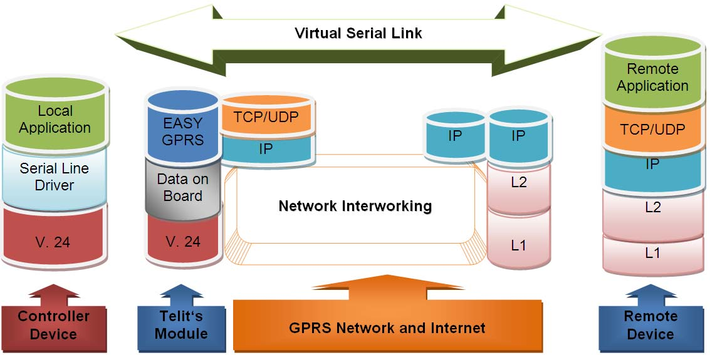
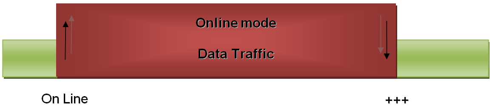
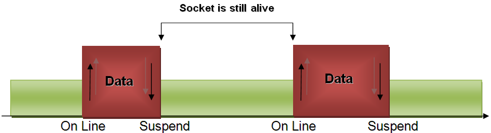
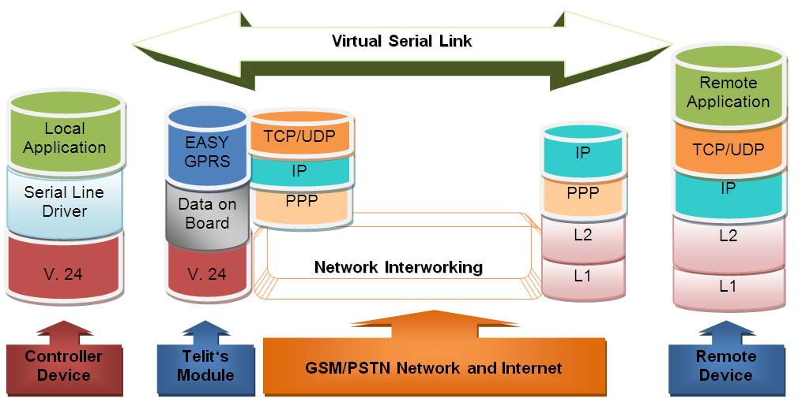
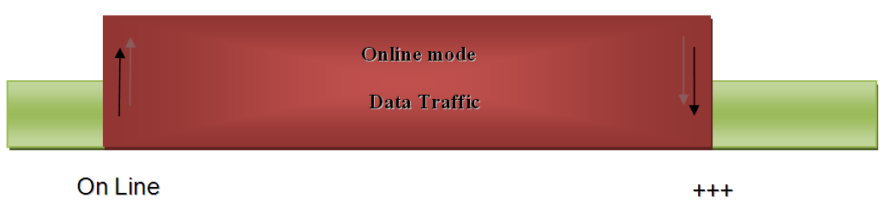
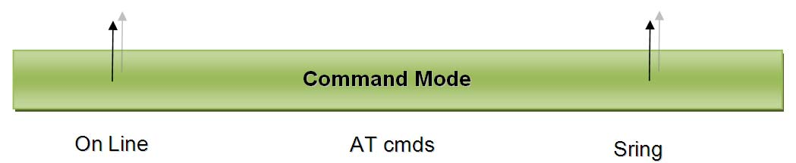

IP Easy User Guide
80000ST10028 Rev. 10 – 2011-03-09


IP Easy User Guide
rev.10 2011-03-09
APPLICABILITY TABLE
PRODUCT
GT863-PY
GT864-QUAD
GT864-PY
GT864-3G
GT863-3GG
GM862-GPS
GC864-QUAD
GC864-DUAL
GC864-QUAD V2
GC864-DUAL V2
UC864-G
UC864-E
UC864-E-DUAL
UC864-E-AUTO
UC864-WD
GE863-QUAD
GE863-GPS
GE863-SIM
GE863-PRO3
GE863-PRO3 with Linux
GE864-QUAD
GE864-QUAD V2
GE864-DUAL V2
GE864-QUAD Automotive V2
GE864-QUAD Atex
GE865-QUAD
GL865-DUAL
GL865-QUAD
Reproduction forbidden without Telit Communications S.p.A. written authorization - All Rights Reserved
page 2 of 89


IP Easy User Guide
SW Version
7.02.xx7 / 7.03.xx2
10.00.xx4
08.01.xx6
3 of 89


80000ST10028 rev.10 2011-03-09
DISCLAIMER
The information contained in this document is the proprietary information of Telit
Communications S.p.A. and its affiliates (“TELIT”).
The contents are confidential and any disclosure to persons other than the officers,
employees, agents or subcontractors of the owner or licensee of this document,
without the prior written consent of Telit, is strictly prohibited.
Telit makes every effort to ensure the quality of the information it makes available.
Notwithstanding the foregoing, Telit does not make any warranty as to the information
contained herein, and does not accept any liability for any injury, loss or damage of any
kind incurred by use of or reliance upon the information.
Telit disclaims any and all responsibility for the application of the devices characterized
in this document, and notes that the application of the device must comply with the
safety standards of the applicable country, and where applicable, with the relevant
wiring rules.
Telit reserves the right to make modifications, additions and deletions to this document
due to typographical errors, inaccurate information, or improvements to programs
and/or equipment at any time and without notice.
Such changes will, nevertheless be incorporated into new editions of this document.
Copyright: Transmittal, reproduction, dissemination and/or editing of this document as
well as utilization of its contents and communication thereof to others without express
authorization are prohibited. Offenders will be held liable for payment of damages. All
rights are reserved.
Copyright © Telit Communications S.p.A. 2011.
Reproduction forbidden without Telit Communications S.p.A. written authorization - All Rights Reserved
page 4 of 89


80000ST10028 rev.10 2011-03-09
Contents
1.
INTRODUCTION .................................................................................................................................... 7
1.1.
SCOPE ............................................................................................................................................................ 7
1.2.
AUDIENCE ...................................................................................................................................................... 7
1.3.
CONTACT INFORMATION, SUPPORT .................................................................................................................... 7
1.4.
DOCUMENT ORGANIZATION ............................................................................................................................... 8
1.5.
TEXT CONVENTIONS ......................................................................................................................................... 8
1.6.
RELATED DOCUMENTS ..................................................................................................................................... 9
1.7.
DOCUMENT HISTORY ...................................................................................................................................... 10
2.
IP EASY OPERATIONS ........................................................................................................................ 12
2.1.
PRELIMINARY CONTEXT PARAMETERS SETTING ................................................................................................... 12
2.1.1.
Context parameter setting ................................................................................................................ 12
2.1.2.
Minimum Quality of the Service Requested ...................................................................................... 14
2.1.3.
Requested Quality of the Service ...................................................................................................... 17
2.1.4.
3G Minimum Quality of the Service Requested ................................................................................ 18
2.1.5.
3G Requested Quality of the Service ................................................................................................. 21
2.2.
CONTEXT ACTIVATION AND DATA STATE ENTERING .............................................................................................. 23
2.3.
DATA STATE EXIT ............................................................................................................................................ 25
3.
IP EASY EXTENSION ........................................................................................................................... 26
3.1.
OVERVIEW ..................................................................................................................................................... 26
3.2.
COMMANDS OVERVIEW ................................................................................................................................... 28
3.2.1.
IP Easy Outgoing Connection ............................................................................................................ 28
3.2.2.
IP Easy Incoming Connection ............................................................................................................ 39
3.2.3.
Known limitations ............................................................................................................................. 45
3.3.
FTP OPERATIONS ...................................................................................................................................... 45
3.3.1.
Opening and Closing an FTP Connection .......................................................................................... 46
3.3.2.
Setting the FTP Transfer Type .......................................................................................................... 47
3.3.3.
FTP File transfer to the server ......................................................................................................... 47
3.3.4.
FTP File download from the server .................................................................................................. 49
3.3.5.
FTP File download restart ................................................................................................................. 53
3.3.6.
FTP File upload restart ..................................................................................................................... 53
3.4.
AT COMMANDS COMPATIBILITY TABLE ............................................................................................................. 54
3.5.
EXAMPLES .................................................................................................................................................... 55
3.5.1.
IP Easy- HTTP client application ....................................................................................................... 55
3.5.2.
IP Easy - EMAIL sending application ................................................................................................ 57
3.5.3.
IP Easy -EMAIL receiving application ............................................................................................... 63
3.5.4.
Remote connection between two modules ....................................................................................... 65
4.1.
OVERVIEW ..................................................................................................................................................... 67
4.2.
COMMANDS OVERVIEW .................................................................................................................................... 68
4.2.1.
Configuring GSM access ................................................................................................................... 68
4.2.2.
Configuring the embedded TCP/IP stack ......................................................................................... 68
4.2.3.
Request GSM context to be activated ............................................................................................... 68
4.2.4.
IP address information ...................................................................................................................... 69
Reproduction forbidden without Telit Communications S.p.A. written authorization - All Rights Reserved
page 5 of 89


80000ST10028 rev.10 2011-03-09
4.2.5.
Limitations and connections with other AT commands ................................................................... 70
4.3.
EXAMPLES .................................................................................................................................................... 70
4.3.1.
Easy GSM - HTTP client application.................................................................................................. 70
4.3.2.
FTP file transfer ................................................................................................................................ 73
4.3.3.
Remote connection between two modules ....................................................................................... 73
5.
COMMAND MODE CONNECTIONS ...................................................................................................... 76
5.1.
OVERVIEW ..................................................................................................................................................... 76
5.2.
COMMANDS OVERVIEW ................................................................................................................................... 76
5.2.1.
Opening a socket connection in command mode ............................................................................. 77
5.2.2.
Configuring extended socket parameters ........................................................................................ 78
5.2.3.
Send data in command mode connections ....................................................................................... 80
5.2.4.
Receive data in command mode connections .................................................................................. 81
5.2.5.
Socket Information command ........................................................................................................... 82
5.3.
EXAMPLES .................................................................................................................................................... 83
5.3.1.
Open a command mode connection with Classic SRING ................................................................. 83
5.3.2.
Open a command mode connection with Data amount SRING ........................................................ 83
5.3.3.
61BOpen a command mode connection with Data view SRING ....................................................... 84
5.3.4.
Open a command mode connection with AT#SA .............................................................................. 85
5.3.5.
Passing from command mode to online mode interface ................................................................. 86
5.3.6.
ICMP / PING handling ....................................................................................................................... 86
6.
LIST OF ACRONYMS ........................................................................................................................... 88
Reproduction forbidden without Telit Communications S.p.A. written authorization - All Rights Reserved
page 6 of 89


80000ST10028 rev.10 2011-03-09
1.
Introduction
The information presented in this document is believed to be accurate and reliable.
However, no responsibility is assumed by Telit Communications S.p.A. for its use, nor
any infringement of patents or other rights of third parties which may result from its
use. No license is granted by implication or otherwise under any patent rights of Telit
Communications S.p.A. other than for circuitry embodied in Telit products. This
document is subject to change without notice.
To get more details on which commands and relative parameters are available on
different SW versions, please consult the AT Commands Reference Guide.
1.1.
Scope
Scope of this document is to provide a broad description of the new IP Easy feature
functionalities and details.
1.2.
Audience
The reader is expected to have gained sound experience in GPRS/UMTS/HSPA
technologies as well as in Telit’s AT Commands interface.
1.3.
Contact Information, Support
For general contact, technical support, to report documentation errors and to order
manuals, contact Telit’s Technical Support Center (TTSC) at:
TS-EMEA@telit.com
TS-NORTHAMERICA@telit.com
TS-LATINAMERICA@telit.com
TS-APAC@telit.com
Alternatively, use:
http://www.telit.com/en/products/technical-support-center/contact.php
3
T
U
U
3
T
For detailed information about where you can buy the Telit modules or for
recommendations on accessories and components visit:
http://www.telit.com
3
T
U
To register for product news and announcements or for product questions contact
Telit's Technical Support Center (TTSC).
Our aim is to make this guide as helpful as possible. Keep us informed of your
comments and suggestions for improvements.
Reproduction forbidden without Telit Communications S.p.A. written authorization - All Rights Reserved
page 7 of 89


80000ST10028 rev.10 2011-03-09
Telit appreciates feedback from the users of our information.
1.4.
Document Organization
This document contains the following chapters:
“Chapter 1: “Introduction” provides a scope for this document, target audience, contact
U
U
and support information, and text conventions.
“Chapter 2: “Preliminary Operations” is about context setting, activation and data
U
U
states.
“Chapter 3: “IP Easy Extention” provides a broad description of The IP Easy feature,
U
U
which allows the Telit module users to contact a device on internet and establish with it
a raw data flow over the Internet networks.
“Chapter 4: “Easy GSM” This new feature allows the Telit module users to connect to
an Internet Service Provider through a GSM CSD call and to use the embedded TCP/IP
stack, such as in IP Easy, to contact a device in Internet and establish with it a raw data
flow over the Internet networks.
“Chapter 5: “Command mode connection” is about the ability for Telit’s modules to
U
U
establish a socket connection in command mode.
“Chapter 6: “List of Acronyms”
1.5.
Text Conventions
Danger – This information MUST be followed or catastrophic equipment failure or
U
bodily injury may occur.
Caution or Warning – Alerts the user to important points about integrating the
module, if these points are not followed, the module and end user equipment may
fail or malfunction.
Tip or Information – Provides advice and suggestions that may be useful when
integrating the module.
All dates are in ISO 8601 format, i.e. YYYY-MM-DD.
Reproduction forbidden without Telit Communications S.p.A. written authorization - All Rights Reserved
page 8 of 89


80000ST10028 rev.10 2011-03-09
1.6.
Related Documents
The following is a list of applicable documents downloadable from the Download Zone
section of Telit’s website http://www.telit.com
AT Command Reference Guide, 80000ST10025a
UC864 AT Command Reference Guide, 80304ST10041a
Telit GSM/GPRS SW User Guide, 1vv0300784
Reproduction forbidden without Telit Communications S.p.A. written authorization - All Rights Reserved
page 9 of 89


80000ST10028 rev.10 2011-03-09
1.7.
Document History
Revision
Date
Changes
ISSUE #0
2007-02-01
Initial release
ISSUE #1
2007-03-14
2.3.2 Easy GPRS – Email sending application: added new examples
ISSUE #2
2007-09-03
updated applicability table
new disclaimer
ISSUE #3
2007-11-29
This document has been integrated with Multisocket User Guide and is
valid from the 7.02.03 SW release
ISSUE #4
2008-07-16
Added new features related to sw release 7.03.00 or 7.02.05
such as: command mode connections and Easy GPRS over GSM
ISSUE#5
2009-07-20
Added new features related to sw release 7.03.01 or 7.02.06 such as:
FTP in command mode (par. 3.3.4.2, 3.3.5, 3.3.6)
ISSUE#6
2009-07-31
Applied new layout – shifted paragraphs accordingly
Added explanation about escape sequence guard time
ISSUE#7
2009-08-24
Added new features related to sw release 7.03.01 or 7.02.06 such as:
automatic context activation,
direct control on TCP/IP settings,
Listen auto-response, UDP Listen,
command mode data sending in Hex format,
ICMP/PING handling.
ISSUE#8
2010-07-26
Added new features related to sw release 7.03.02
or 7.02.07 such as:
added new socket configuration parameters
(see new #SCFGEXT2 command)
added new command #SSENDEXT for sending data
in command modeAdded new features related to sw release 7.03.02 ,
7.02.07 or 10.0.02 such as:
AT#PADFWD and AT#PADCMD commands
Removed parameter no more present in #EMAILD
command from the example(pag. 61)
Added new features related to SW release 10.0.03 such as:
AT#BASE64 command
AT#SGACTCFGEXT command
Added note in Easy GSM chapter, about COPS and CSURV commands
ISSUE#9
2010-10-04
Added GL865-DUAL to applicability table
Reproduction forbidden without Telit Communications S.p.A. written authorization - All Rights Reserved
page 10 of 89


80000ST10028 rev.10 2011-03-09
ISSUE#10
2011-03-09
Added new features related to sw release 10.0.04 such as:
AT#SMTPCL command, it allows to send and email
with different types of attachments.
#SMTPCL handles attachment, managing MIME headers
and encoding if required.
Updated all references from “GPRS” to “GPRS/UMTS/HSPA”(or removed
when not required)
Correction on #SSENDEXT referenced wrongly
as “#SSEND” at page 78; par. 5.2.3
Correction on par. 5.2.1(pag.74),
reference to #SD / cmd mode
(was wrongly indicated as “ATem”)
Added general note regarding availability of commands
on different SW version
Changed title from EASY GPRS User Guide to IP Easy User Guide
Reproduction forbidden without Telit Communications S.p.A. written authorization - All Rights Reserved
page 11 of 89


80000ST10028 rev.10 2011-03-09
2.
IP Easy Operations
2.1.
Preliminary context parameters setting
2.1.1.
Context parameter setting
The context parameters consist in a set of information identifying the internet entry
point interface provided by the ISP. Using these parameters, the network identifies the
ISP to be used to gain access to the internet, and defines the value of the IP address for
the GPRS device, once connected.
Send command
AT+CGDCONT[=[<cid>[,<PDP_type>[,<APN>[,<PDP_addr>[,<d_comp>[,<h_co
mp>[,<pd1>[,…[,pdN]]]]]]]]]]<cr>
where:
<cid> - (PDP Context Identifier) numeric parameter which specifies a particular PDP
context definition.
Values:
1..max - where the value of max is returned by the Test command
<PDP_type> - (Packet Data Protocol type) a string parameter which specifies the type
of packet data protocol
Values:
"IP" - Internet Protocol
"PPP" - Point to Point Protocol
<APN> - (Access Point Name) a string parameter that represents logical name used to
select GGSN or external packet data network. If the value is null or omitted, then the
subscription value will be requested.
<PDP_addr> - a string parameter that identifies the terminal in the address space
applicable to the PDP. The allocated address may be read using the +CGPADDR
command.
<d_comp> - numeric parameter that controls PDP data compression
Values:
0 - off (default if value is omitted)
Reproduction forbidden without Telit Communications S.p.A. written authorization - All Rights Reserved
page 12 of 89


80000ST10028 rev.10 2011-03-09
1 - on
<h_comp> - numeric parameter that controls PDP header compression
Values:
0 - off (default if value is omitted)
1 - on
<pd1>, …, <pdN> - zero to N string parameters whose meanings are specific to the
<PDP_type>
NOTE:
A special form of the Set command, +CGDCONT=<cid>, causes the values for context
number <cid> to become undefined.
NOTE:
Issuing AT+CGDCONT<CR> is the same as issuing the Read command.
NOTE:
Issuing AT+CGDCONT=<CR> returns the OK result code.
Wait for response:
Response
Reason
Action
OK
context parameters have been
proceed ahead
successfully stored
ERROR
some error occurred
check parameters and retry
Reproduction forbidden without Telit Communications S.p.A. written authorization - All Rights Reserved
page 13 of 89


80000ST10028 rev.10 2011-03-09
For example:
1- Let's assume you want to set-up the context number 1(cid) with your GPRS
connection parameters:
APN: ibox.tim.it
IP address: dynamically assigned by the ISP
Packet Data Protocol type: Internet Protocol (IP)
Data compression: OFF
Header compression: OFF
command:
AT+CGDCONT= 1,"IP","ibox.tim.it","0.0.0.0",0,0 <cr>
response
OK
2.1.2.
Minimum Quality of the Service Requested
The minimum quality of service requested parameters represent the boundary under
which the connection quality is not anymore acceptable and will be terminated.
send command
AT+CGQMIN=<cid>,<precedence>,<delay>,<reliability>,<peak>,<mean><cr>
where:
<cid> - is the index number of the desired context to be written (up to 5 different
context).
<precedence> - is the precedence class. It is applied when the network has a heavy
duty and user precedence must be followed to ensure operations, the higher the
priority the better the service.
Values:
0 - subscribed (default)
1 - High priority
2 - Normal priority
3 - Low priority
<delay> - is the delay class. It represents the maximum allowable time delay class
between the sending and the reception of a packet.
Reproduction forbidden without Telit Communications S.p.A. written authorization - All Rights Reserved
page 14 of 89


80000ST10028 rev.10 2011-03-09
Values:
0 - subscribed (default)
1 - delay class 1
2 - delay class 2
3 - delay class 3
4 - delay class 4 (best effort)
<reliability> - is the connection reliability class. It represents the connection reliability
requested, the higher is the number the less reliable is the data exchanged.
Values:
0 - subscribed (default)
1 - reliability class 1 (acknowledged GTP,LLC and RLC; protected data)
2 - reliability class 2 (unacknowledged GTP, acknowledged LLC and RLC; protected
data)
3 - reliability class 3 (unacknowledged GTP and LLC, acknowledged RLC; protected
data)
4 - reliability class 4 (unacknowledged GTP,LLC and RLC; protected data)
5 - reliability class 5 (unacknowledged GTP,LLC and RLC; unprotected data)
<peak> - is the peak data transfer throughput
Values:
0 - subscribed (default)
1 - up to 7,8 kbps
2 - up to 15,6 kbps
3 - up to 31,3 kbps
4 - up to 62,5 kbps
5 - up to 125 kbps
6 - up to 250 kbps
7 - up to 500 kbps
8 - up to 1000 kbps
9 - up to 2000 kbps
<mean> - is the mean data transfer throughput
Values:
0 - subscribed (default)
1 - up to 0,8 kbps
2 - up to 1,6 kbps
3 - up to 3,9 kbps
4 - up to 7,8 kbps
5 - up to 15,6 kbps
6 - up to 39 kbps
7 - up to 78 kbps
8 - up to 156 kbps
9 - up to 390 kbps
Reproduction forbidden without Telit Communications S.p.A. written authorization - All Rights Reserved
page 15 of 89


80000ST10028 rev.10 2011-03-09
10 - up to 7,6 Mbps
11 - up to 15.2 Mbps
12 - up to 38.2 Mbps
13 - up to 76.3 Mbps
14 - up to 152 Mbps
15 - up to 381 Mbps
16 - up to 762 Mbps
17 - up to 1525 Mbps
18 - up to 3815 Mbps
31 - Best Effort
wait for response:
Response
Reason
Action
OK
context parameters have been
proceed ahead
successfully stored
ERROR
some error occurred
check parameters and retry.
NOTE:
If your minimum requirements are too high, then it can happen that it is impossible to
establish a connection, because the network has not enough resources to guarantee
that quality of service. If does this happen, then you shall try reducing your minimum
quality requirements.
For example:
1- Let's assume you want to set-up the GPRS context number 1(cid) written before with
your GPRS min QoS parameters:
Precedence class: Normal priority
Delay class: subscribed
Reliability class: subscribed
Peak throughput: not less than 15,6 kbps
Mean throughput: not less than 7,8 kbps
command:
AT+CGQMIN= 1,2,0,0,5,4 <cr>
response
OK
Reproduction forbidden without Telit Communications S.p.A. written authorization - All Rights Reserved
page 16 of 89


80000ST10028 rev.10 2011-03-09
NOTE:
Telit suggests to setup AT+CGQMIN=1,0,0,0,0,0
2.1.3.
Requested Quality of the Service
The requested quality of service parameters represents the connection quality that is
requested to the network on context activation.
send command
AT+CGQREQ=<cid>,<precedence>,<delay>,<reliability>,<peak>,<mean><cr>
where:
<cid> - is the index number of the desired context to be written (up to 5 different
context).
<precedence> - is the precedence class
<delay> - is the delay class
<reliability> - is the connection reliability class
<peak> - is the peak data transfer throughput
<mean> - is the mean data transfer throughput
Parameters assume the same values as in the previous section.
wait for response:
Response
Reason
Action
OK
context parameters have been
proceed ahead
successfully stored
ERROR
some error occurred
check parameters and retry
Reproduction forbidden without Telit Communications S.p.A. written authorization - All Rights Reserved
page 17 of 89


80000ST10028 rev.10 2011-03-09
For example:
1- Let's assume you want to set-up the context number 1(cid) written before with your
GPRS requested QoS parameters:
Precedence class: High priority
Delay class: subscribed
Reliability class: subscribed
Peak throughput: subscribed
Mean throughput: best effort
command:
AT+CGQREQ= 1,1,0,0,0,31 <cr>
response
OK
NOTE:
Telit suggests to setup AT+CGQMIN=1,0,0,3,0,0
2.1.4.
3G Minimum Quality of the Service Requested1
The 3G minimum quality of service requested parameters represent the boundary
under which the 3G connection quality is not anymore acceptable and will be
terminated.
send command
AT+CGEQMIN=[<cid>[,<traffic class>[,<maximum bitrate UL>[,<maximum
bitrate DL>[,<guaranteed bitrate UL>[,<guaranteed bitrate DL>[,<delivery
order>[,<maximum SDU size>[,<SDU error ratio>[,<residual bit error
ratio>[,<delivery of erroneous SDUs>[,<transfer delay>[,<traffic handling
priority>]]]]]]]]]]]]]<cr>
where:
<cid> - the index number of the desired context to be written (up to 16 different
context).
<traffic class> - a numeric parameter that indicates the type of application for which
the UMTS bearer service is optimised.
0 – conversational
1 Applicable products: UC864-G, UC864-E, UC864-E-DUAL, UC864-E-AUTO, UC864-WD
Reproduction forbidden without Telit Communications S.p.A. written authorization - All Rights Reserved
page 18 of 89


80000ST10028 rev.10 2011-03-09
1 – streaming
2 - interactive
3 - background
4- subscribed value (default)
<maximum bitrate UL> - a numeric parameter that indicates the maximum number of
kbits/s delivered to UMTS (up-link traffic) at a SAP. As an example a bitrate of 32kbit/s
would be specified as ‘32’(e.g. AT+CGEQMIN=…,32,…)(refer TS24.008 [8] subclause
10.5.6.5).
0 – subscribed value (default)
1…512
<maximum bitrate DL> - a numeric parameter that indicates the maximum number of
kbits/s delivered by UMTS (down-link traffic) at a SAP. As an example a bitrate of
32kbit/s would be specified as ‘32’(e.g. AT+CGEQMIN=…,32,…)(refer TS 24.008 [8]
subclause 10.5.6.5).
0 – subscribed value (default)
1…16000
<guaranteed bitrate UL> - a numeric parameter that indicates the guaranteed number
of kbits/s delivered by UMTS (up-link traffic) at a SAP(provided that there is data to
deliver). As an example a bitrate of 32kbit/s would be specified as ‘32’(e.g.
AT+CGEQMIN=…,32,…)(refer TS 24.008 [8] subclause 10.5.6.5).
0 – subscribed value (default)
1..512
<guaranteed bitrate DL> - a numeric parameter that indicates the guaranteed number
of kbits/s delivered by UMTS (down-link traffic) at a SAP (provided that there is data to
deliver). As an example a bitrate of 32kbit/s would be specified as ‘32’(e.g.
AT+CGEQMIN=…,32,…) (refer TS 24.008 [8] subclause 10.5.6.5).
0 – subscribed value (default)
1…16000
<delivery order> - a numeric parameter that indicates whether the UMTS bearer shall
provide in-sequence SDU deliver or not.
0 – no
1 – yes
2 – subscribed value (default)
<maximum SDU size> - a numeric parameter(1,2,3,…) that indicates the maximum
allowed SDU size in octets(refer TS 24.008 [8] subclause 10.5.6.5).
0 – subscribed value (default)
1…1520
Reproduction forbidden without Telit Communications S.p.A. written authorization - All Rights Reserved
page 19 of 89


80000ST10028 rev.10 2011-03-09
<SDU error ratio> - a string parameter that indicates the target value for the fraction
of SDUs lost or detected as erroneous. SDU error ratio is defined only for conforming
traffic. The value is specified as ‘mEe’. As an example a target SDU error ration of 5*10-
3 would be specified as ‘5E3’ (e.g. AT+CGEQMIN=…”5E3”,…)(refer TS 24.008 [8]
subclause 10.5.6.5).
“0E0” (default)
“1E1”
“1E2”
“7E3”
“1E3”
“1E4”
“1E5”
“1E6”
<residual bit error ratio> - a string parameter that indicates the target value for the
undetected bit error ratio in the delivered SDUs. If no error detection is requested,
Residual bit error ratio indicates the bit error ratio in the delivered SDUs. The value is
specified as ‘mEe’. As an example a tartet residual bit error ration of 5*10-3 would be
specified as ‘5E3’( e.g. AT+CGEQMIN=…,”5E3”,…)(refer TS 24.008 [8] subclause 10.5.6.5).
“0E0” (default)
“5E2”
“1E2”
“5E3”
“4E3”
“1E3”
“1E4”
“1E5”
“1E6”
“6E8”
<delivery of erroneous SDUs> - a numeric parameter that indicates whether SDUs
detected as erroneous shall be delivered or not.
0 - no
1 – yes
2 – no detect
3 – subscribed value (default)
Reproduction forbidden without Telit Communications S.p.A. written authorization - All Rights Reserved
page 20 of 89


80000ST10028 rev.10 2011-03-09
<transfer delay> - a numeric parameter (0,1,2,…) that indicates the targeted time
between request to transfer an SDU at on SAP to its delivery at the other SAP, in
milliseconds (refer TS 24.008 [8] subclause 10.5.6.5).
0 – subscribed value (default)
100…4000
<traffic handling priority> - a numeric parameter(1,2,3,…) that specifies the relative
importance for handling of all SDUs belonging to the UMTS bearer compared to the
SUDs of other bearers ( refer TS 24.008 [8] subclause 10.5.6.5).
0 – subscribed value
1…3
wait for response:
Response
Reason
Action
OK
context parameters have been
proceed ahead
successfully stored
ERROR
some error occurred
check parameters and retry.
NOTE:
If your minimum requirements are too high, then it can happen that it is impossible to
establish a PDP activation, because the network has not enough resources to
guarantee that quality of service. If does this happen, then you shall try reducing your
minimum quality requirements.
NOTE:
Telit suggests to setup AT+CGEQMIN=1,4,0,0,0,0,2,0,”0E0”,”0E0”,3,0,0 (default setting
value)
2.1.5.
3G Requested Quality of the Service2
The 3G requested quality of service parameters represents the connection quality that
is requested to the UMTS network on PDP context activation.
send command
2 Applicable products: UC864-G, UC864-E, UC864-E-DUAL, UC864-E-AUTO, UC864-WD
Reproduction forbidden without Telit Communications S.p.A. written authorization - All Rights Reserved
page 21 of 89


80000ST10028 rev.10 2011-03-09
AT+CGEQREQ=[<cid>[,<traffic class>[,<maximum bitrate UL>[,<maximum
bitrate DL>[,<guaranteed bitrate UL>[,<guaranteed bitrate DL>[,<delivery
order>[,<maximum SDU size>[,<SDU error ratio>[,<residual bit error
ratio>[,<delivery of erroneous SDUs>[,<transfer delay>[,<traffic handling
priority>]]]]]]]]]]]]]<cr>
where:
<cid> - is the index number of the desired context to be written (up to 16 different
context).
<traffic class>
<maximum bitrate UL>
<maximum bitrate DL>
<guaranteed bitrate UL>
<guaranteed bitrate DL>
<delivery order>
<maximum SDU size>
<SDU error ratio>
<residual bit error ratio>
<delivery of erroneous SDUs>
<transfer delay>
<traffic handling priority>
Parameters assume the same values as in the previous section.
wait for response:
Response
Reason
Action
OK
context parameters have been
proceed ahead
successfully stored
ERROR
some error occurred
check parameters and retry
NOTE:
Telit suggests to setup AT+CGEQREQ=1,4,0,0,0,0,2,0,”0E0”,”0E0”,3,0,0(default setting
value)
Reproduction forbidden without Telit Communications S.p.A. written authorization - All Rights Reserved
page 22 of 89


80000ST10028 rev.10 2011-03-09
2.2.
Context activation and data state entering
This operation corresponds to the dial and connect of a CSD GSM data call issued to an
internet service provider.
send command
ATD*99***<cid>#<cr>
where:
<cid> - is the index number of the desired context to be used (up to 5 different context)
wait for response:
Response
Reason
Action
CONNECT
connection is being processed
proceed ahead with the
authentication & Packed data
protocol
ERROR
some error occurred
check context parameters and
retry. See par.2.2.1, 2.2.2, 2.2.3
check also Network
registration status.
check context parameters and
+CME ERROR: <error code>
some error occurred
retry. See par.2.2.1, 2.2.2, 2.2.3
check also Network
registration status.
For example:
1- Let's assume you want to activate and enter the data state with context number
1(cid) written before with your requested QoS parameters:
command:
ATD*99***1# <cr>
response
CONNECT
At this point, your application should start the PPP protocol with the LCP Exchange
phase:
Reproduction forbidden without Telit Communications S.p.A. written authorization - All Rights Reserved
page 23 of 89


80000ST10028 rev.10 2011-03-09
LCP Configure Request
LCP Configure Acknowledge
PAP Authentication
PAP-Ack
NCP (IP) Configure Request
NCP (IP) Configure Acknowledge
At this point the TCP/IP - PPP protocol stack is up and data packets can be exchanged.
NOTE:
Explanation of TCP/IP and PPP protocol stack is beyond the scope of this document.
Further information on the LCP protocol and PPP protocol definition can be found in
the RFC1661. Further information on the PAP protocol definition can be found in the
RFC1334. Further information on the IPCP protocol definition can be found in the
RFC1332.
NOTE:
The CONNECT result code is raised before complete connection establishment.
Reproduction forbidden without Telit Communications S.p.A. written authorization - All Rights Reserved
page 24 of 89


80000ST10028 rev.10 2011-03-09
2.3.
Data state exit
LCP Terminate Request
LCP Terminate Acknowledge
Wait for NO CARRIER response.
or in alternative:
send escape sequence:
+++
wait for 2s ( default silence time)
wait for response:
Response
Reason
Action
OK
Telit module is in command
proceed ahead
mode now
ERROR
some error occurred
check command syntax and
timing and retry
NO CARRIER
connection has been closed
proceed ahead
send command
ATH<cr>
wait for response:
Response
Reason
Action
OK
connection has been closed
ERROR
some error occurred
check command syntax and
retry
Reproduction forbidden without Telit Communications S.p.A. written authorization - All Rights Reserved
page 25 of 89



80000ST10028 rev.10 2011-03-09
3.
IP Easy Extension
3.1.
Overview
The IP Easy feature allows the Telit module users to contact a device on internet and
establish with it a raw data flow over the GPRS/UMTS/HSPA and Internet networks.
This feature can be seen as a way to obtain a "virtual" serial connection between the
Application Software on the Internet machine involved and the controller of the Telit
module, regardless of all the software stacks underlying.
An example of the protocol stack involved in the devices is reported:
This specific implementation allows the devices to interface to the Telit module via
GPRS/UMTS/HSPA and Internet packets without the need of an internal TCP/IP stack
since this function is already embedded inside the module.
As a new functionality of Telit modules, multisocket is an extension of the Telit IP Easy
feature, which allows the user to have two activated contexts (this means two different
IP address), more than one socket connection -- with a maximum of 6 connections --
and simultaneous FTP client and EMAIL client services.
Reproduction forbidden without Telit Communications S.p.A. written authorization - All Rights Reserved
page 26 of 89




80000ST10028 rev.10 2011-03-09
The basic idea behind multisocket is the possibility of suspend a socket connection with
the escape sequence +++.
With the #SKTD command it is possible to open a socket connection and get online.
When the online activities are concluded, the +++ sequence is used to close the
connection (see the figure below).
The green part represents the module command mode while the red part is the online
mode.
Now, the online mode can be suspended with the escape sequence +++ by using the
multisocket feature. During suspend mode the data received by the socket will be
buffered, which data will be displayed after socket resumption, as shown in the figure
below:
This new feature allows users to switch between online mode and command mode
without closing the connection or even opening another socket (or resuming the
suspended one), FTP or EMAIL connection.
Another new feature is the possibility to associate any socket connection to a specific
context. This means that we can use different IP addresses for connections (max 2).
The Socket Identifier is called Connection Id -- selects which socket we want to use
from 1 up to 6 -- and every Connection Id is associated to a context.
Reproduction forbidden without Telit Communications S.p.A. written authorization - All Rights Reserved
page 27 of 89


80000ST10028 rev.10 2011-03-09
3.2.
Commands Overview
What follows are new AT command sequences that activate context, sets and opens the
socket connection. There will be explained a new listen command and how to use FTP
and Easy GPRS at the same time.
NOTE:
For more detailed AT commands and parameters definitions please consult the AT
Commands Reference Guide.
3.2.1.
IP Easy Outgoing Connection
The IP Easy feature provides a way to place outgoing TCP/UDP connections and keep
the same IP address after a connection is made, leaving the context active.
The steps required to open a socket and close it without closing the GRPS context are:
configuring the GPRS/UMTS/HSPA Access
configuring the embedded TCP/IP stack behavior
defining the Internet Peer to be contacted
request the context to be activated
request the socket connection to be opened
exchange data
close the TCP connection while keeping the context active
All these steps are achieved through AT commands. As far as the common modem
interface, two logical statuses are involved: command mode and data traffic mode.
In Command Mode (CM), some AT commands are provided to configure the
Data Module Internet stack and to start up the data traffic.
In data traffic mode (Socket Mode, SKTM), the client can send/receive a raw
data stream which will be encapsulated in the previously configured TCP / IP
packets which will be sent to the other side of the network and vice versa. Control
plane of ongoing socket connection is deployed internally to the module.
Reproduction forbidden without Telit Communications S.p.A. written authorization - All Rights Reserved
page 28 of 89


80000ST10028 rev.10 2011-03-09
3.2.1.1.
Configuring the GPRS/UMTS/HSPA access
The access configuration is done by setting:
the context number 1 parameters (see +CGDCONT command)
the Authentication parameters: User Name and Password (see command
#SGACT)
3.2.1.2.
Configuring the embedded TCP/IP stack
The TCP/IP stack behavior must be configured by setting:
the packet default size
the data sending timeout
the socket inactivity timeout
Before opening a connection we have to set the socket parameters with the new #SCFG
command. It is possible to set all the timeout values and packet size for each socket
connection with a single AT command. The command syntax is:
AT#SCFG = <Conn Id>, <Cntx Id>, <Pkt sz>, <Global To>, <Conn To>, <Tx To>
Where:
Conn Id
-the connection identifier
Cntx Id
-the context identifier
Pkt sz
-the minimum data packet sent to the net
(default 300 bytes)
Global To
-inactivity timeout (default 90 sec.)
Conn To
-connection timeout (default 60 sec, expressed in
tenths of second)
Tx To
-data sending timeout (default 5 sec, expressed in
tenths of second)
The first two parameters are new and they represent the association between the
socket connection and the context set with +CGDCONT. It means that we can have
socket connection working on different IP addresses.
The other parameters replace the old IP Easy commands #DSTO, #SKTTO, #SKTCT and
#PKTSZ.
Reproduction forbidden without Telit Communications S.p.A. written authorization - All Rights Reserved
page 29 of 89


80000ST10028 rev.10 2011-03-09
If we try to modify the socket configuration of an online connection, an error will appear.
So it’s recommended to set the socket configuration at the beginning. It is strongly
recommended to leave the first Connection Id associated to context one to allow
simultaneous FTP, SMTP and IP Easy services.
The values set with this command are saved in NVM.
Example:
We want to associate the Connection Id number 2 to the context number 3 with a
minimum packet size of 512 bytes, global timeout of 30 sec, connection timeout of 30
sec and transmission timeout of 10 sec.
Command:
AT#SCFG = 2, 3, 512, 30, 300,100
Answer:
OK if command execution is correct
ERROR if a parameter is wrong or the connection Id is working online
3.2.1.3.
Request the context to be activated
This command allows activation of one of the contexts defined with AT command
+CGDCONT. With multisocket it is possible to activate simultaneously two contexts of
the five that have been set. We can write username and password directly from
command line (if required). At least one Connection Id must be associated to the
context we want to activate; otherwise an error will be appear.
The command syntax is:
#SGACT= <Cntx Id>,<Status>, [<Username>],[<Password>]
Where:
Cntx Id is the context that we want to activate/deactivate.
Status is the context status (0 means deactivation, 1 activation).
Example:
We want to activate context number two defined with +CGDCONT.
Reproduction forbidden without Telit Communications S.p.A. written authorization - All Rights Reserved
page 30 of 89


80000ST10028 rev.10 2011-03-09
Command:
AT#SGACT = 2,1
Answer:
#SGACT: “212.195.45.65”
OK if activation success.
ERROR if activation fails.
The response code to the AT#SGACT=1 command reports the IP address obtained from
the network, allowing the user to report it to his server or application.
Deactivating the context implies freeing the network resources previously allocated to
the device.
NOTE:
Also the command AT+CGACT activates a context, but in this case the context cannot be
used for IP Easy.
It’s also possible to set authentication type through the command AT#SGACTAUTH.
The command syntax is:
AT#SGACTAUTH=<type>
0 – no authentication
1 – PAP authentication(factory default)
2 - CHAP authentication
It’s also possible to enable automatic activation/reactivation of a specified PDP context
in case of switching off/on, in case of deactivation from Network and in case of SIM
removal.
NOTE: at least one IPEasy socket has to be previously associated to this context by
command AT#SCFG. The command syntax is:
AT#SGACTCFG=<Cntx Id>,<retry>[,<delay>[,<urcmode>]]
Where:
<Cntx Id>(1-5) is the context that we want to automatic activate/reactivate
<retry>(0-15) is the number of activation/reactivation attempts(if it fails)
<delay>(180-3600) is the delay(sec) between two successive attempts
<urcmode>(0-1) enable unsolicited result code of the local IP address obtained
from the network
Reproduction forbidden without Telit Communications S.p.A. written authorization - All Rights Reserved
page 31 of 89


80000ST10028 rev.10 2011-03-09
Example:
AT#SGACTCFG=1,3 - activation/reactivation set on context 1 with 3 attempts.
No previous setting through #SCFG is needed in this case, because socket connection
identifiers <Conn Id> 1,2,3 are already associated to <Cntx Id> 1 by default.
Furthermore it is possible to abort a context activation attempt, while waiting for AT
response, by sending a char on the serial port.
To enable this feature on a <cid> new #SGACTCFGEXT command has been
implemented.
The command syntax is:
AT#SGACTCFGEXT=<cid>,<abortAttemptEnable>
By setting <abortAttemptEnable> on <cid>, attempt pre-emption
is allowed.
For more details, please refer to refer to the AT Commands Reference Guide.
Open the connection with the internet host
With the AT command #SD (socket Dial) the TCP/UDP request to connect with the
internet host starts:
DNS query is done to resolve the IP address of the host name internet peer if
required
Telit module establishes a TCP/UDP (depending on the parameter request)
connection with the given internet host
Once the connection is up the module reports the code: CONNECT
The command syntax is:
AT#SD = <Conn Id>,<Protocol>, <Remote Port>, <IP address> [, <Closure Type> [,
<Local Port>]]
Where:
Conn Id is the connection identifier.
Protocol is 0 for TCP and 1 for UDP.
Remote Port is the port of the remote machine.
Reproduction forbidden without Telit Communications S.p.A. written authorization - All Rights Reserved
page 32 of 89


80000ST10028 rev.10 2011-03-09
IP address is the remote address.
To open the remote connection the context to which the Connection Id is associated
must be active, otherwise an error will appear.
For example, if we want to connect to a web server with Connection Id number 3 the
command is:
AT#SD = 3 , 0 , 80 , “www.telit.com”
If the command is successful we’ll have a CONNECT message, and the socket number 3
will be connected to the Telit webserver.
From this moment the data incoming in the serial port is packet and sent to the
Internet host, while the data received from the host is serialised and flushed to the
Terminal Equipment.
The +++ sequence does not close the socket, but only suspends it.
NOTE:
Check guard time/S12 parameter before and after escape sequence.
We can suspend the connection and open another one with a different Connection Id.
A typical command sequence is:
AT#SD = 3 , 0 , 80 , “www.telit.com”
CONNECT
(send, receive data….)
(+++)
OK
OK is returned after the escape sequence, it means that the socket has been
suspended correctly.
Now the connection number 3 is suspended and the module is in command mode so we
can give another #SD command.
AT#SD = 2 , 0 , 80 , “www.google.com”
CONNECT
Reproduction forbidden without Telit Communications S.p.A. written authorization - All Rights Reserved
page 33 of 89


80000ST10028 rev.10 2011-03-09
(send, receive data….)
(+++)
OK
If we try to open a connection while the ConnId is in suspended state or online an error
will be occur.
If a suspended connection receives some data the user will receive an unsolicited
SRING indication from the module. In case we receive some data from the suspended
connection with Telit server we’ll receive this unsolicited message:
SRING: 3
where 3 is the number of the ConnId with data pending.
NOTE:
The unsolicited SRING indication appears only in command mode.
New commands #PADFWD and #PADCMD have been implemented3:
with #PADFWD it is possible to choose a char that, if received from serial port and if
#PADCMD is set, enables flushing of pending data on the socket.
Example:
AT#PADFWD=65
OK
AT#PADCMD=1
OK
AT#SD = 3 , 0 , 80 , “www.telit.com”
CONNECT
// data are not sent on the socket till <Pkt sz>
// is reached or <Tx To> is expired….
………………….
reserved char(65) set through #PADFWD is sent =>
3 Not available on UC864-G, UC864-E, UC864-E-DUAL, UC864-E-AUTO and UC864-WD
Reproduction forbidden without Telit Communications S.p.A. written authorization - All Rights Reserved
page 34 of 89


80000ST10028 rev.10 2011-03-09
flushing of all data on the socket follows
(including reserved char)
3.2.1.4.
Resuming a suspended connection with #SO
This is the new command to resume a suspended connection, the command syntax is:
AT#SO = <Conn Id>
Example:
AT#SD = 2 , 0 , 80 , “www.google.com”
CONNECT
data sending
(+++)
OK
SRING: 2
AT#SO = 2
CONNECT
data sending
(+++)
In case there is data pending on this socket -- you can know this the unsolicited
message SRING has appeared before--, issuing command AT#SO these pending data
will be displayed after the CONNECT string.
It is possible to resume a suspended socket without waiting for SRING message or data
pending on that connection.
Using AT#SO on a Connection Id in idle state (no socket open or suspended) we obtain a
NO CARRIER message.
3.2.1.5.
Close the Socket without deactivating the context
The connection can be closed for the following reasons:
Reproduction forbidden without Telit Communications S.p.A. written authorization - All Rights Reserved
page 35 of 89


80000ST10028 rev.10 2011-03-09
remote host TCP connection close
socket inactivity timeout
Terminal Equipment by issuing the escape sequence "+++" and AT#SH that
specifies the Connection Id
Network deactivation
With the new management of the escape sequence we need a command to close the
socket connection. The AT command syntax to use is:
AT#SH = <conn Id>
Example:
AT#SD = 2 , 0 , 80 , “www.google.com”
CONNECT
data sending
(+++)
OK
AT#SH = 2
OK
Now the connection is closed. If we send this command with an idle Connection Id we
obtain in any case an OK message.
NOTE:
If there is an escape sequence in the raw data to be sent, then the TE must work it out
and sent it in a different fashion to guarantee that the connection is not closed.
The pause time is defined in the parameter S12. To avoid sending of the escape
sequence a command AT#SKIPESC should be set at the beginning.
3.2.1.6.
Specific settings for TCP/IP options
If needed, it’s possible to have direct control on particular TCP/IP settings:
Enabling of TCP reassembly feature.
Reproduction forbidden without Telit Communications S.p.A. written authorization - All Rights Reserved
page 36 of 89


80000ST10028 rev.10 2011-03-09
The command syntax is:
AT#TCPREASS=<n>
0 – disable TCP reassembly feature(default)
1 – enable TCP reassembly feature
Maximum TCP/IP payload size accepted in one single TCP/IP datagram.
The command syntax is:
AT#TCPMAXDAT=<size>(bytes) –
maximum TCP payload size accepted in one single TCP/IP datagram received from the
peer
<size> will be sent by the module(TCP stack) to the peer when the socket connection
will be opened.
Example:
AT#TCPMAXDAT=1000 – maximum TCP payload size accepted from peer set to 1000
bytes
Then, if we open a TCP socket connection we will advice the peer that we will not accept
TCP/IP datagrams with a payload bigger than 1000 bytes.
3.2.1.7.
Sending and receiving base64 encoded data4
Through new #BASE64 command is possible to enable base64 encoding/decoding of
data sent/received on a socket.
The command syntax is: AT#BASE64=<connId>,<enc>,<dec>
where <enc> and <dec> enable respectively encoding and/or
decoding on <connId> socket.
<enc> and <dec> can be set to 1 or 2 depending on MIME line feeds setting
required(please refer to the AT Commands Reference Guide)
Encoding: if enabled, all data are encoded base64 while
they are received from serial port, before to be sent on
<connId> socket.
4 Not available on UC864-G, UC864-E, UC864-E-DUAL, UC864-E-AUTO and UC864-WD
Reproduction forbidden without Telit Communications S.p.A. written authorization - All Rights Reserved
page 37 of 89


80000ST10028 rev.10 2011-03-09
Decoding: if enabled, all data are decoded base64 while
they are received from <connId> socket, before to be sent
on the serial port.
Example:
at#skipesc=1
OK
AT#SD=1,0,<port>,"IP"
CONNECT
// Data received from serial port are sent
// directly on the socket
+++ (suspension)
at#base64=1,1,0
OK
AT#SO=1
CONNECT
// Data received from serial port are encoded
// base64 before to be sent on the socket
+++ (suspension)
at#base64=1,0,1
OK
AT#SO=1
CONNECT
// Data received from socket are decoded
// base64 before to be sent on the serial port
+++ (suspension)
…………………
NOTE:
It is also possible to use new feature in command mode
(please refer to AT Commands Reference Guide).
Reproduction forbidden without Telit Communications S.p.A. written authorization - All Rights Reserved
page 38 of 89


80000ST10028 rev.10 2011-03-09
3.2.2.
IP Easy Incoming Connection
The IP Easy feature provides a way to accept incoming TCP/UDP connections and keep
the same IP address after a connection, leaving the context active.
The steps that will be required to open a socket in listen, waiting for connection
requests from remote hosts and accept these request connections only from a selected
set of hosts, then close it without closing the context are:
configuring the GPRS/UMTS/HSPA Access
configuring the embedded TCP/IP stack behavior (see par. 3.2.1.2)
defining the Internet Peer that can contact this device (firewall settings) (see
par.3.2.2.1)
request the context to be activated (see par.3.2.1.3)
request the socket connection to be opened in listen (see par. 3.2.2.2)
receive connection requests (see par.3.2.2.3)
exchange data
close the TCP connection while keeping the context active (see par.3.2.1.6)
All these steps are achieved through AT commands. As for common modem interface,
two logical statuses are involved: command mode and data traffic mode.
In Command Mode (CM), some AT commands are provided to configure the Data
Module Internet stack and to start up the data traffic.
In data traffic mode (Socket Mode, SKTM), the client can send/receive a raw data
stream which will be encapsulated in the previously configured TCP / IP packets
which will be sent to the other side of the network and vice versa. Control plane
of ongoing socket connection is deployed internally to the module.
3.2.2.1.
Defining the Internet Peer that can contact this device (firewall settings)
The Telit module has an internal Firewall that controls the behavior of the incoming
connections to the module. The firewall applies for INCOMING (listening) connections;
OUTGOING connections will be always done regardless of the firewall settings.
Firewall General policy is DROP, therefore all packets that are not included into an
ACCEPT chain rule will be silently discarded.
When packet incomes from the IP address <incoming IP>, the firewall chain rules will
be scanned for matching with the following criteria:
Reproduction forbidden without Telit Communications S.p.A. written authorization - All Rights Reserved
page 39 of 89


80000ST10028 rev.10 2011-03-09
<incoming IP> & <net mask> = <ip_address> ?
if the result is yes, then the packet is accepted and the rule scan is finished, otherwise
the next chain is taken into account until the end of the rules when the packet is silently
dropped if no matching was found.
For example, let’s assume we want to accept connections only from our devices which
are on the IP addresses ranging from 197.158.1.1 to 197.158.255.255
We need to add the following chain to the firewall:
AT#FRWL=1,"197.158.1.1","255.255.0.0"
3.2.2.2.
Request the socket connection to be opened in listen
The new listen command is now extended to 6 connections; it’s possible to set from 1 to
6 socket listening on a specific port for the incoming connections. Another difference
with the old IP Easy is that now we receive an unsolicited indication when someone
tries to connect, so we can decide to accept (AT#SA) or refuse (AT#SH) the incoming
connection.
NOTE:
In case you decide to reject an incoming connection request the listening socket will be
closed and if you want to re-open it the AT command AT#SL needs to be re-issued.
The command syntax is:
AT#SL = <Conn Id>, <Listen state>, <Listen port>[, <Closure Type>]
It’s not possible to have two ConnId listening on the same port.
Example:
Suppose that we want to listen on port 6543 Connection Id number 2
AT#SL = 2, 1, 6543
OK
Reproduction forbidden without Telit Communications S.p.A. written authorization - All Rights Reserved
page 40 of 89


80000ST10028 rev.10 2011-03-09
Now the module is listening for incoming connection on port 6543 with Connection Id
number 2, if a remote host is trying to connect we’ll receive a SRING unsolicited
indication with the listening Connection Id:
SRING: 2
3.2.2.3.
Accept an incoming connection with #SA
After receiving the SRING indication for an incoming connection we can decide to
refuse the remote host connection with #SH command or accept the connection with
#SA command.
The command syntax is:
AT#SA = <conn Id>
Example:
We are listening on Connection Id 3 and port 6543
AT#SL = 3, 1, 6543
OK
A remote host is trying to connect, we receive the unsolicited indication.
SRING: 3
Now we accept the connection
AT#SA = 3
CONNECT
We pass in online mode and the connection is established. With the escape sequence
we suspend the socket and the module is back to command mode. To resume the
suspended connection we can use the #SO command described above.
Reproduction forbidden without Telit Communications S.p.A. written authorization - All Rights Reserved
page 41 of 89


80000ST10028 rev.10 2011-03-09
NOTE5:
It’s also possible to accept automatically the incoming connection if the
<ListenAutoRsp> parameter has been set through the command AT#SCFGEXT(for the
specific connId);
see also par. 5.2.2.
In this case no unsolicited indication is received, but the connection is automatically
accepted: the CONNECT indication is given and the modem goes into online data
mode5.
It’s also possible to open a socket listening for an incoming UDP connection on a
specified port.
The command syntax is:
AT#SLUDP=<connId>, <listenState>, <listenPort>
Also in this case it’s possible to receive SRING unsolicited and decide to accept (AT#SA)
or refuse (AT#SH).
It is also possible to accept automatically incoming connection depending on
<ListenAutoRsp> settings5.
3.2.2.4.
Checking the socket status with #SS
With the old IP Easy socket connection the possible states were: online state or closed,
while with multi-socket suspension we have other socket states. With the new
command AT#SS we can see the status of all the six sockets.
The command syntax is:
AT#SS
[=<connId>]
Suppose that we have suspended some sockets and we are in command mode, in order
to verify which Connection Id has been opened, we can use AT#SS command to have a
snapshot of sockets status.
5 Not available on UC864-G, UC864-E, UC864-E-DUAL, UC864-E-AUTO and UC864-WD
Reproduction forbidden without Telit Communications S.p.A. written authorization - All Rights Reserved
page 42 of 89


80000ST10028 rev.10 2011-03-09
The command result is:
#SS: <ConnId>,<Status>,<Local IP>,<Local Port>,<Remote IP>,<Remote Port>
For every Connection Id with have the information about our local IP address, local port,
remote IP and port if we are connected.
The Status field represents the socket status:
0 – Socket Closed.
1 – Socket with an active data transfer connection.
2 – Socket suspended.
3 – Socket suspended with pending data.
4 – Socket listening.
5 – Socket with an incoming connection. Waiting for the user accept or shutdown
command.
Example:
AT#SS
#SS: 1,4,217.201.131.110,21
#SS: 2,2,217.201.131.110,1033,194.185.15.73,10510
#SS: 3,3,217.201.131.110,1034,194.185.15.73,10510
#SS: 4,1,217.201.131.110,1035,194.185.15.73,10510
#SS: 5,0
#SS: 6,0
OK
In this case we can see Connection Id 1 in listen mode on port 21, number 2 suspended
with no data pending, number 3 suspended with pending data and number 1 is online.
The last two connections are closed
By issuing AT#SS=<connId> it’s possible to get status only of the corresponding socket.
3.2.2.5.
Using FTP and IP Easy together
Another new functionality of multi-socket is the simultaneous FTP client service with
socket connections. We can use socket suspension mode to give FTP commands as in
the old IP Easy, keeping socket alive and eventually resuming socket connections when
we need to.
Reproduction forbidden without Telit Communications S.p.A. written authorization - All Rights Reserved
page 43 of 89


80000ST10028 rev.10 2011-03-09
NOTE:
It is recommended to leave Connection Id 1 associated to context 1 for using this
functionality. ( for more explanation see also paragraph 3.2.1.2)
3.2.2.6.
Using CMUX and Multi-socket
Using CMUX we can have up to three virtual port to execute normal AT commands; if we
join CMUX with multi-socket we can share the six connections on the three ports (six is
the total number in any case) and we can have up to three sockets active (online) at the
same time6.
FTP with CMUX is locked on the opening port. So if we try to open an FTP client
connection on another virtual port the FTP commands will show an error message until
the first connection with FTP server is not closed. When the connection is closed we
can open another FTP session on another virtual port. In any case we can always have
only one FTP session opened at the time.
3.2.2.7.
Using old interface command on Multi-socket
The old commands like #SKTD or #SKTL are available also on multi-socket platform
and they work like in the old IP Easy platform. If we open a connection with #SKTD we
can’t suspend the connection, and the +++ sequence will close definitively the
connection.
In particular with #SKTD command we have the possibility to open three simultaneous
connections using CMUX virtual ports. They are closed using the +++ sequence7.
NOTE:
#SKTOP has some limitations. It is available only on the first virtual port of CMUX and it
is recommended not to use it with the new multi-socket commands because #SKTOP
deactivates the context when the connection is closed. This can generate the closure of
6 Only one socket (Online Data Mode , SKTM) for UC864-G, UC864-E, UC864-E-DUAL, UC864-E-AUTO and
UC864-WD
7 Not available on UC864-G, UC864-E, UC864-E-DUAL, UC864-E-AUTO and UC864-WD
Reproduction forbidden without Telit Communications S.p.A. written authorization - All Rights Reserved
page 44 of 89


80000ST10028 rev.10 2011-03-09
suspended sockets. It’s strongly recommended in any case to avoid using old IP Easy
command with new multi-socket commands.
3.2.2.8.
Dial Up with Multisocket
With multi-socket we recommend you to use the first context for a dialup connection
and use the other available context for IP Easy socket connection.
The first context must be deactivated to make dialup connection work correctly, if we
activate IP Easy and dialup at the same time the performance get worse. It is possible
to make web browsing and IP Easy socket connection at the same time.
3.2.3.
Known limitations
The implementation of the IP EASY feature has the following known limitations:
#SKTOP is available only on the first virtual port of CMUX8
PPP and IP Easy functionalities not on the same IP Address (PPP uses always
the first Cntx Id)
Multi listen only on different IP ports
It’s not allows to use two Data Traffic mode on CMUX or Multiple channels at
the same time9.
3.3.
FTP OPERATIONS
A set of AT commands is available to support the FTP activities. The first command is
called #FTPTO (FTP Time-Out) which defines the time-out for FTP operations. The
module has already a factory default time defined that is 10 s.
If it is needed to be modified, the syntax is:
AT#FTPTO[=<tout>]
8 Not available on UC864-G, UC864-E, UC864-E-DUAL, UC864-E-AUTO and UC864-WD
9 Only available on UC864-G, UC864-E, UC864-E-DUAL, UC864-E-AUTO and UC864-WD
Reproduction forbidden without Telit Communications S.p.A. written authorization - All Rights Reserved
page 45 of 89


80000ST10028 rev.10 2011-03-09
Parameter:
<tout> - time-out in 100 ms units
Values:
100..5000 - hundreds of ms (factory default is 100)
NOTE:
The parameter is not saved in NVM.
NOTE:
if parameter <tout> is omitted the behavior of Set command is the same as Read
command.
Example:
AT#FTPTO=1000<cr> (set the timeout to 100sec)
OK
3.3.1.
Opening and Closing an FTP Connection
With the command AT#FTPOPEN=<server:port>,<username>,<password>,<mode>
is possible to open the FTP connection.
The parameters are:
<server:port> - string type, address and port of FTP server (factory default port 21).
<username> - string type, authentication user identification string for FTP.
<password> - string type, authentication password for FTP.
<mode>
Values :
0 - active mode (default)
1 - passive mode
In order to close the FTP connection the AT command AT#FTPCLOSE should be used.
Reproduction forbidden without Telit Communications S.p.A. written authorization - All Rights Reserved
page 46 of 89


80000ST10028 rev.10 2011-03-09
3.3.2.
Setting the FTP Transfer Type
With the command AT#FTPTYPE[=<type>] is possible to configure the file transfer
type. The command must be provided during an FTP connection.
Parameter:
<type> - file transfer type:
Values:
0 - binary
1 - ASCII
NOTE:
The command causes an ERROR result code to be returned if no FTP connection has
been opened yet.
NOTE:
If the parameter is omitted then the behavior of Set command is the same of Read
command.
3.3.3.
FTP File transfer to the server
With the command AT#FTPPUT=<filename> , to issued during an FTP connection, is
possible to open a data connection and starts sending <filename> file to the FTP server.
If the data connection succeeds, a CONNECT indication is sent, otherwise a NO
CARRIER indication is sent.
Parameter:
<filename> - string type, name under which you choose to save the file on the server
(must have the right extension: es. if the file you’re sending is .txt then the <filename>
can be test.txt)
NOTE:
Use the escape sequence +++ to close the data connection.
Reproduction forbidden without Telit Communications S.p.A. written authorization - All Rights Reserved
page 47 of 89


80000ST10028 rev.10 2011-03-09
NOTE:
Check the guard time/S12 parameter before and after escape sequence.
NOTE:
The command causes an ERROR result code to be returned if no FTP connection has
been opened yet.
Example:
Define PDP context:
AT+CGDCONT=1,”IP”, "internet.wind.biz"<cr>
OK
Context Activation, as response gives IP of the module:
AT#SGACT=1,1 <cr>
#SGACT: 193.199.234.255
OK
Opening of FTP connection:
AT#FTPTO=1000<cr>
(FTP settings of time-out)
OK
AT#FTPOPEN=”199.188.25.77”,”user”,”pass”,0<cr>
OK
In this case port of FTP server is not specified, which means that it has the default
value: 21
AT#FTPTYPE=0<cr>
(FTP settings of file type)
OK
FTP file transfer to the server in the file named “file.txt”:
AT#FTPPUT="file.txt"<cr>
CONNECT
(send the file)
+++ (escape
sequence
+++ to close the data connection)
NOCARRIER
AT#FTPCLOSE<cr>
(closing FTP connection)
OK
Reproduction forbidden without Telit Communications S.p.A. written authorization - All Rights Reserved
page 48 of 89


80000ST10028 rev.10 2011-03-09
Deactivation of context if required:
AT#SGACT=1,0<cr>
OK
3.3.4.
FTP File download from the server
3.3.4.1.
FTP download / online mode
The command AT#FTPGET=<filename> , issued during an FTP connection, opens a
data connection and starts getting a file <filename> from the FTP server.
If the data connection succeeds, a CONNECT indication is sent, otherwise a NO
CARRIER indication is sent. The file is received on the serial port.
Parameter:
<filename> - file name, string type.
NOTE:
The command causes an ERROR result code to be returned if no FTP connection has
been opened yet.
Example:
Define PDP context:
AT+CGDCONT=1,”IP”, "internet.wind.biz"<cr>
OK
Context Activation, as response it gives the IP of the module:
AT#SGACT=1,1 <cr>
#SGACT: 193.199.234.255
OK
Open the FTP connection:
AT#FTPTO=1000<cr>
(FTP settings of time-out)
OK
AT#FTPOPEN=”199.188.25.77”,”user”,”pass”,0<cr>
OK
Reproduction forbidden without Telit Communications S.p.A. written authorization - All Rights Reserved
page 49 of 89


80000ST10028 rev.10 2011-03-09
In this case the port of FTP server is not specified, which means that it has the default
value of 21
AT#FTPTYPE=0<cr>
(FTP settings of file type)
OK
AT#FTPCWD="incoming"
(change working directory if required)
OK
In order to get the list of files on the working directory from the server AT command
AT#FTPLIST should be used.
Download the FTP file “file.txt” from the server:
AT#FTPGET="file.txt"<cr>
CONNECT
(receive the file)
Data connection will be closed automatically when the file sending is terminated:
NO CARRIER
AT#FTPCLOSE<cr>
(closing FTP connection)
OK
Deactivation of context if required:
AT#SGACT=0<cr>
OK
TIP:
The #SGACT command activates the context and it is necessary to start the FTP
connection.
Reproduction forbidden without Telit Communications S.p.A. written authorization - All Rights Reserved
page 50 of 89


80000ST10028 rev.10 2011-03-09
3.3.4.2.
FTP download / command mode10
It’s possible to start an FTP download while remaining in command mode, buffering
data in the module, by issuing #FTPGETPKT command during an FTP connection.
Successive transfer of required data onto the serial port is possible by issuing
#FTPRECV command.
The command syntax of #FTPGETPKT is:
AT#FTPGETPKT=<filename>[,<viewMode>]
where the optional parameter <viewMode> permit to choose view mode (text format or
Hexadecimal).
If the data connection succeeds, and we get an OK indication, it’s possible to check how
many buffered bytes are currently available, by issuing #FTPRECV? read command.
Then, with the command AT#FTPRECV=<blocksize> , it’s possible to transfer at most
<blocksize> bytes onto the serial port. This number is limited to the current number of
bytes of the remote file which have been transferred from the FTP server.
After issuing #FTPGETPKT, the application can issue AT commands as usual in
command mode -- except for FTP commands that need to open data ports like
#FTPLIST, because the data port has been already opened by #FTPGETPKT itself.
Example:
Provided that an FTP connection has already been issued by an FTPOPEN command as
indicated in 2.2.4.1, the following applies.
Download the FTP file “file.txt” from the server while still remaining in command
mode:
AT#FTPGETPKT="file.txt"
OK
The data port is opened and the download of the file is started; data is buffered within
the module.
By issuing #FTPRECV read command we get the available bytes to read:
10 Not available on UC864-G, UC864-E, UC864-E-DUAL, UC864-E-AUTO and UC864-WD
Reproduction forbidden without Telit Communications S.p.A. written authorization - All Rights Reserved
page 51 of 89


80000ST10028 rev.10 2011-03-09
AT#FTPRECV?
#FTPRECV: 600
OK
Read the required part of the available buffered data:
AT#FTPRECV=400
#FTPRECV: 400
Text row number 1 * 1111111111111111111111111 *
Text row number 2 * 2222222222222222222222222 *
Text row number 3 * 3333333333333333333333333 *
Text row number 4 * 4444444444444444444444444 *
Text row number 5 * 5555555555555555555555555 *
Text row number 6 * 6666666666666666666666666 *
Text row number 7 * 7777777777777777777777777 *
Text row number 8 * 88888888888888888888
OK
Read the required part of the available buffered data:
AT#FTPRECV =200
#FTPRECV: 200
88888 *
Text row number 9 * 9999999999999999999999999 *
Text row number 10 * AAAAAAAAAAAAAAAAAAAAAAAAA *
Text row number 12 * BBBBBBBBBBBBBBBBBBBBBBBBB *
Text row number 13 * CCCCCCCCCCCCCCCC
OK
NOTE:
to check when you have read the whole file, use AT#FTPGETPKT read command:
AT#FTPGETPKT?
#FTPGETPKT: sample.txt,0,1
OK
Third parameter indicates <eof>(end of file) current state(first parameter is file name
and second
Indicates text or hex mode).
Reproduction forbidden without Telit Communications S.p.A. written authorization - All Rights Reserved
page 52 of 89


80000ST10028 rev.10 2011-03-09
Data port is automatically closed by read command #FTPGETPKT? itself when the
whole file has been red(by last #FTPRECV): another FTP download in online/command
mode can be started by issuing #FTPGET/#FTPGETPKT.
3.3.5.
FTP File download restart11
It’s possible to restart an FTP download from a specific position(byte) of the file by
issuing #FTPREST command before FTPGET(or FTPGETPKT) command.
The syntax is:
AT#FTPREST=<restartposition>(byte).
NOTE:
it’s necessary to issue FTPTYPE=0 before FTPGET(or FTPGETPKT) command to set
binary file transfer type.
3.3.6.
FTP File upload restart
It’s possible to restart an FTP upload from a specific position(byte).
If previous FTP upload(FTPPUT) of file <filename> has been interrupted, it’s possible to
know how many bytes have been received from the server by issuing
#FTPFSIZE=<filename>(during an FTP connection).
NOTE:
it’s necessary to issue FTPTYPE=0 before FTPFSIZE command to set binary file
transfer type.
Then application can append missing part of the file with AT#FTPAPP=<filename>,
using FTPFSIZE response to know restart position of the local file.
To get more information for other available commands on the FTP functionality please
refer to the AT Commands Reference Guide.
11 Not available on UC864-G, UC864-E, UC864-E-DUAL, UC864-E-AUTO and UC864-WD
Reproduction forbidden without Telit Communications S.p.A. written authorization - All Rights Reserved
page 53 of 89


80000ST10028 rev.10 2011-03-09
NOTE:
FTP works only on context one (AT#SGACT=1,1)
3.4.
AT Commands Compatibility Table
Telit advises all clients that start a new application development with SW version
7.02.03 or higher to use these new IP Easy AT commands. Below you can find
compatibility table for old and new commands:
IP Easy old AT
IP Easy
Operation
commands
new AT commands
description
AT#SKTOP
AT#SGACT; AT#SD
socket open
AT#SKTD
AT#SD
socket dial
AT#SKTL
AT#SL
socket listen
AT#SKTSET
not required
AT#SKTSAV
not required
AT#GPRS
AT#SGACT
activation of
context
+++ after AT#SKTD
+++; AT#SH
socket close
+++ after AT#SKTOP
+++; AT#SH; AT#SGACT
AT#USERID
AT#SGACT
authentication
AT#PASSWD
AT#SGACT
AT#PKTSZ
AT#SCFG
AT#DSTO
AT#SCFG
socket
AT#SKTTO
AT#SCFG
configuration
AT#SKTCT
AT#SCFG
It is strongly recommended not to mix the new commands with the old ones.
Reproduction forbidden without Telit Communications S.p.A. written authorization - All Rights Reserved
page 54 of 89


80000ST10028 rev.10 2011-03-09
3.5.
Examples
3.5.1.
IP Easy- HTTP client application
Let’s suppose we want to connect our embedded device to an HTTP server and retrieve
an HTML page using the IP EASY feature.
Initial data:
Server to be contacted
www.telit.com
Application Layer Protocol
HTTP1.0 (RFC1945);
HTTP1.1 (RFC2068)
Page to be retrieved
homepage of server
Preliminary settings
APN
internet
IP of device
dynamically assigned by the
network
DNS
assigned by the network
USERID
IPEASY
PASSWORD
IPEASY
Socket parameters
Connection Identifier
1
Packet size (used by
TCP/UDP/IP stack for data
300
sending)
Socket inactivity timeout
90
Connection timeout
600
Data sending time out
50
Checking on the RFC990 the HTTP service we can found that the port 80 is dedicated for
HTTP service, therefore our HTTP server will be waiting for incoming connections on
that port and we will fix the IP EASY port to be contacted on the remote server exactly
to 80.
Second thing we have to discover is whether the transport protocol has to be TCP or
UDP; on the RFC1945 we can read that the HTTP Application layer protocol is meant to
be on top of TCP/IP protocol, therefore the transport protocol choice will fall on TCP.
Now we have all the information needed to configure our system.
With our microcontroller we issue to the Telit module the following AT commands:
AT+CGDCONT = 1,"IP","internet","0.0.0.0",0,0<cr>
(GPRS context setting)
Reproduction forbidden without Telit Communications S.p.A. written authorization - All Rights Reserved
page 55 of 89


80000ST10028 rev.10 2011-03-09
For all the socket settings the following AT command will be used:
AT#SCFG=1,1,300,90,600,50
OK
Next step is activation of the context:
AT#SGACT=1,1,“EASY GPRS“,“EASY GPRS“
#SGACT: 193.199.234.255
OK
This command replies with the IP address assigned by the network.
Now we can proceed with contacting the server with AT command for socket dial:
AT#SD=1,0,80,”www.telit.com”,0,0
When we receive the CONNECT indication, then we are exchanging data with the HTTP
server program on the remote host machine.
Now following the HTTP protocol we ask for the homepage by sending the following
lines on the serial line:
GET / HTTP/1.1<cr><lf>
Host: www.telit.com<cr><lf>
Connection: keep-alive<cr><lf>
<cr><lf>
TIP:
Remember that the strings, which are sent to the HTTP server, have to be ended by line
feed character. To see the issued commands enable the local echo.
As a response to our query the HTTP server will reply with the HTML code of the
homepage and some debugging responses that we will see directly on the serial line:
HTTP/1.1 200 OK
Date: Thu, 06 2003 10:21:58 GMT
Server: Apache/1.3.27 (Unix)
Last-Modified: Thu, 06 2003 10:21:58 GMT
Content-Type: text/html
Connection: close
<!DOCTYPE HTML PUBLIC "-//W3C//DTD HTML 3.2 FINAL//EN">
<HTML>
… here is all the HTML code of the page..
Reproduction forbidden without Telit Communications S.p.A. written authorization - All Rights Reserved
page 56 of 89

80000ST10028 rev.10 2011-03-09
</HTML>
<pause>+++<pause>
OK
AT#SH=1
OK
The Telit module is now back to command mode and the socket is closed.
3.5.2.
IP Easy - EMAIL sending application
Let’s suppose we want to send with our embedded device an EMAIL by using a SMTP
server.
Initial data:
Server to be contacted
smtp.domain.com
SMTP service
port #25
Application Layer Protocol
SMTP (RFC821)
Sender
"module"<module@domain.com>
Receiver
"Receiver"<receiver@server.net>
Subject
Email Test
Message body
This message is sent in order to
test IP Easy feature. Hello
World!
Preliminary settings
APN
internet
IP of device
dynamically assigned by the
network
DNS
assigned by the network
USERID
IPEASY
PASSWORD
IPEASY
SMTP settings
SMTP server address
smtp.domain.com
Email account
USERID
module@domain.com
PASSWORD
telit
Socket parameters
Connection Identifier
1
Packet size (used by
TCP/UDP/IP stack for data
300
sending)
Reproduction forbidden without Telit Communications S.p.A. written authorization - All Rights Reserved
page 57 of 89


80000ST10028 rev.10 2011-03-09
Socket inactivity timeout
90
Connection timeout
600
Data sending time out
50
Checking on the RFC990 the SMTP service we can found that the port 25 is dedicated
for SMTP service, therefore our SMTP server will be waiting for incoming connections
on that port and we will fix the IPEASY port to be contacted on the remote server
exactly to 25.
Second thing we have to discover is whether the transport protocol has to be TCP or
UDP; on the RFC821 we can read that the SMTP Application layer protocol is meant to
be on top of TCP/IP protocol, therefore the transport protocol choice will fall on TCP.
Now we have all the information needed to configure our system.
The email can be sent following three different procedures:
1. Opening socket with SMTP server and then sending directly SMTP commands.
The following AT commands should be issued to the Telit module:
AT+CGDCONT = 1,"IP","internet","0.0.0.0",0,0<cr>
(context
setting)
For all the socket settings the following AT command will be used:
AT#SCFG=1,1,300,90,600,50
OK
Next step is activation of the context:
AT#SGACT=1,1,“EASY GPRS“,“EASY GPRS“
#SGACT: 193.199.234.255
OK
The command gives as response the IP address assigned by the network.
Now we can proceed with contacting the server with AT command for socket dial:
AT#SD=1, 0,25,"smtp.domain.com",0,0<cr>
When we receive the CONNECT indication, then we are exchanging data with the SMTP
server program on the remote host machine.
Reproduction forbidden without Telit Communications S.p.A. written authorization - All Rights Reserved
page 58 of 89


80000ST10028 rev.10 2011-03-09
Following the SMTP protocol we proceed with the HELO presentation and mail delivery
directly over the serial line (in blu you can find the data sent by us, in violet the one
received from host):
220 smtp.domain.com ESMTP Service (7.0.027-DD01) ready
HELO pcprova<cr><lf>
250
smtp.domain.com
AUTH LOGIN<cr><lf>
(authentication method)
334 VXRlcm8gkXU6
Z204NjJAZG9tYWluLmNvbQ==<cr><lf> (module@domain.com base64 encoding)
334 UHFzc6dcvmQ6
dGVsaXQ= <cr><lf>
(telit base64 encoding)
235 2.0.0 OK Authenticated
MAIL FROM: module@domain.com <cr><lf> (Sender)
250 2.1.0 module@domain.com... Sender ok
RCPT TO: receiver@server.net <cr><lf>
(Receiver)
250
2.1.5
receiver@server.net... Recipient ok
DATA<cr><lf>
354 Enter mail, end with "." on a line by itself
Return-Receipt-To: < module@domain.com ><cr><lf>
Reply-To: < module@domain.com ><cr><lf>
From: < module@domain.com ><cr><lf>
To: < receiver@server.net ><cr><lf>
Subject: Email test<cr><lf>
Date: Fri, 19 Sep 2003 11:41:32 +0200<cr><lf>
MIME-Version: 1.0<cr><lf>
Reproduction forbidden without Telit Communications S.p.A. written authorization - All Rights Reserved
page 59 of 89


80000ST10028 rev.10 2011-03-09
X-Priority: 3 (Normal) <cr><lf>
X-MSMail-Priority: Normal<cr><lf>
X-Mailer: GM862 TELIT SW, Build 1.0.1000 (1.0.1111.0) <cr><lf>
Importance: Normal<cr><lf>
X-MimeOLE: Produced By GM862 TEST SW<cr><lf>
<cr><lf>
Content-Type: text/plain; <cr><lf>
charset="iso-8859-1"<cr><lf>
Content-Transfer-Encoding: 7bit<cr><lf>
<cr><lf>
This message is sent in order to test IP Easy feature. Hello World!<cr><lf>
<cr><lf>
. <cr><lf>
250 2.0.0 h8J9QNH3008461 Message accepted for delivery
QUIT<cr><lf>
221
2.0.0
smtp.domain.com closing connection
+++
OK
AT#SH=1
OK
The Telit module is now back in the command mode and the socket is closed.
2) Using only AT commands is with the following sequence of commands issued to the
Telit module:
AT+CGDCONT=1,"IP","internet","0.0.0.0",0,0<cr> (1-context setting)
AT#ESMTP = "smtp.domain.com"<cr>
(2-SMTP server setting)
AT#EUSER = "module@domain.com"<cr> (3-Authentication
setting)
AT#EPASSW
=
"telit"<cr>
(4-Authentication
setting)
AT#EADDR= "module@telit.net"<cr>
(5-Sender address setting)
AT#ESAV
(6-save
settings)
NOTE:
Authentication settings could be different between context and SMTP. This is due to the
fact that in the context authentication it is requested user and password of your
internet provider, instead of the SMTP authentication where user and password is used
to connect to the SMTP server.
Reproduction forbidden without Telit Communications S.p.A. written authorization - All Rights Reserved
page 60 of 89


80000ST10028 rev.10 2011-03-09
Now we need to activate the context:
AT#SGACT=1,1,“IPEASY“,“IPEASY“
#SGACT: 193.199.234.255
OK
This AT command gives as response the IP address of the module assigned by the
network.
After receiving the OK indication, we can finally send an EMAIL:
AT#EMAILD="receiver@domain.com","Email test"
> this message is sent in order to test the IP Easy feature. Hello World!
CTRL-Z
NOTE:
SMTP works only on context one (AT#SGACT=1,1)
1. It is possible to attach a file to an email using #SMTPCL.
#SMTPCL handles attachment, managing MIME headers and encoding if required.
If it is specified that no attachment will be included(<att> parameter 0): command
behavior is the same as with #EMAILD.
Otherwise: the command behaves like #EMAILD regarding message body text, then
modem goes into online mode(CONNECT indication is given) to allow the application to
send the attachment.
The escape sequence has to be used to close the SMTP connection.
Encoding of data received on the serial port is performed if required(<encod>
parameter), before transmission on the SMTP socket.
The command syntax is:
AT#SMTPCL=<da>,<subj>,<att>[,<filename>,<encod>]
Where:
<da> - destination address, string type.
(maximum length 100 characters)
Reproduction forbidden without Telit Communications S.p.A. written authorization - All Rights Reserved
page 61 of 89


80000ST10028 rev.10 2011-03-09
<subj> - subject of the message, string type.
(maximum length 100 characters)
<att> - attached file flag
0 – no attachment
1 – attach a txt file
2 – attach a binary file(jpg,bin,pdf,...)
<filename> - attached file name
(maximum length 50 characters)
<encod> -Content-Transfer-Encoding used for attachment
0 – “7bit” means data all represented as short lines of
US-ASCII data
1 – “base64” designed to represent arbitrary sequences of
octets in a form that need not be humanly readable
Note:
If a txt file (<att>=1) is attached, only <encod>0(“7bit”) is possible.
If a binary file (<att>=2) is attached, only <encod>1(“base64”) is possible.
Examples
at#smtpcl="receiver@domain.com","Email test2",1,"sample.txt",0
>message body...this is the text of the mail message…
Send CTRL-Z
CONNECT
…data received on the serial port are sent as attachment….
Send escape sequence to close the SMTP connection
+++
NO CARRIER
at#smtpcl="receiver@domain.com"," Email test3",2,"image.jpg",1
>message body...this is the text of the mail message…
Send CTRL-Z
CONNECT
…data received on the serial port are base64-encoded and sent as attachment….
Send escape sequence to close the SMTP connection
+++
Reproduction forbidden without Telit Communications S.p.A. written authorization - All Rights Reserved
page 62 of 89


80000ST10028 rev.10 2011-03-09
NO CARRIER
3.5.3.
IP Easy -EMAIL receiving application
Let's suppose we want to receive with our embedded device an EMAIL by using a POP3
server.
Initial data:
Server to be contacted
POP.mail.server
POP service
port #110
Application Layer Protocol
POP3 (RFC1785)
Receiver
"module"<module@domain.com>
Email account username
module@domain.com
Email account password
telit
Context settings
APN
internet
IP of device
dynamically assigned by the
network
DNS
assigned by the network
USERID
IPEASY
PASSWORD
IPEASY
Socket parameters
Connection Identifier
1
Packet size (used by
TCP/UDP/IP stack for data
300
sending)
Socket inactivity timeout
90
Connection timeout
600
Data sending time out
50
Checking on the RFC1785, we can found that the port 110 is dedicated for POP3 service,
therefore our POP server will be waiting for incoming connections on that port and we
will fix the IP EASY port to be contacted on the remote server exactly to 110.
Second thing we have to discover is whether the transport protocol has to be TCP or
UDP; on the RFC1785 we can read that the POP3 Application layer protocol is meant to
be on top of TCP/IP protocol, therefore the transport protocol choice will fall on TCP.
Now we have all the information needed to configure our system.
Reproduction forbidden without Telit Communications S.p.A. written authorization - All Rights Reserved
page 63 of 89


80000ST10028 rev.10 2011-03-09
With our microcontroller we can now issue to the Telit module the following AT
commands:
AT+CGDCONT = 1,"IP","internet","0.0.0.0",0,0<cr>
(1- context setting)
For all the socket settings the following AT command will be used:
AT#SCFG=1,1,300,90,600,50
OK
Next step is activation of the context:
AT#SGACT=1,1,“IPEASY“,“IPEASY“
#SGACT: 193.199.234.255
OK
The commands gives as response the IP address assigned to the module by the
network.
AT#SD=1,0,110,"POP.mail.server",0,0<cr>
When we receive the CONNECT indication, then we are exchanging data with the POP3
server program on the remote host machine.
Following the POP3 protocol we can proceed with the authentication directly over the
serial line (in blue you can find the data sent by us, in violet the one received from host):
+OK POP3 PROXY server ready (7.0.027) <A6B4DDEA93433C73A01@pop4.libero.it>
USER module@domain.com<cr><lf>
+OK Password required
PASS telit<cr><lf>
+OK 1 messages
LIST\r\n
+OK
1 19550
.
RETR 1<cr><lf>
+OK 19550 bytes
Return-Path: <module@domain.com>
Received: from smtp5.libero.it (193.70.192.55) by ims2d.libero.it (7.0.028)
Reproduction forbidden without Telit Communications S.p.A. written authorization - All Rights Reserved
page 64 of 89


80000ST10028 rev.10 2011-03-09
id 40DFC49A010E5708 for test@libero.it; Tue, 17 Aug 2004 12:24:02+0200
Received: from smtp.telital.com (194.185.15.65) by smtp5.libero.it (7.0.027-DD01)
.
QUIT<cr><lf>
+OK POP3 server closing connection
+++
OK
AT#SH=1
OK
3.5.4.
Remote connection between two modules
Configuration for the module that receives data (server):
Define PDP Context
AT+CGDCONT=1,”IP”,”ibox.tim.it”,”0.0.0.0”
Context Activation
AT#SGACT=1,1
Firewall Setup
AT#FRWL=1,”198.158.1.1”,”0.0.0.0”
Socket Listen
AT#SL=1,1,0,1024
First you have to define PDP context filling in the information of APN in this example:
ibox.tim.it.
Next step is activation of context which gives as reply the IP of the module assigned by
network:
AT#SGACT=1,1
#SGACT: 217.201.142.223
OK
Before opening socket in listen it is possible to define an accept firewall chain in order
to filter IP of the senders.
At the end with AT command AT#SL=1,1,1024,0 the socket will be set in listen on the
port #1024.
Configuration for the module that opens connection (client):
Define PDP Context
AT+CGDCONT=1,”IP”,”ibox.tim.it”,”0.0.0.0”
Context Activation
AT#SGACT=1,1
Socket Dial
AT#SD=2,0,1024,”217.201.142.223”
First you have to define PDP context filling in the information of APN in this example:
ibox.tim.it.
Reproduction forbidden without Telit Communications S.p.A. written authorization - All Rights Reserved
page 65 of 89


80000ST10028 rev.10 2011-03-09
Next step is activation of context which gives as reply the IP of the module assigned by
network. Now you can open the connection with the remote host with IP address
217.201.142.223 on the port 1024 (as in example).
NOTE12:
IP of the modules can be verified with the following AT command line: AT#CGPADDR=
12 Not available on UC864-G, UC864-E, UC864-E-DUAL, UC864-E-AUTO and UC864-WD
Reproduction forbidden without Telit Communications S.p.A. written authorization - All Rights Reserved
page 66 of 89



80000ST10028 rev.10 2011-03-09
4.
Easy GSM13
4.1.
Overview
This new feature allows the Telit module users to connect to an Internet Service
Provider through a GSM CSD call and to use the embedded TCP/IP stack, such as in IP
Easy, to contact a device in Internet and establish with it a raw data flow over the
Internet networks.
The connection between the module and the Provider is based on PPP protocol over a
GSM CSD call.
An example of the protocol stack involved in the devices is reported:
In this case the speed at which packets can be downloaded is limited to the maximum
data rate for a data call, 14400 bps.
All the features of Telit multisocket, FTP and EMAIL can be used over the GSM carrier.
In order to enable GSM carrier, a particular context has to be activated with
identification number 0. The use of this context is analogue to that of
GPRS/UMTS/HSPA contexts.
13 Not available on UC864-G, UC864-E, UC864-E-DUAL, UC864-E-AUTO and UC864-WD
Reproduction forbidden without Telit Communications S.p.A. written authorization - All Rights Reserved
page 67 of 89


80000ST10028 rev.10 2011-03-09
4.2.
Commands overview
This paragraph describes the configuration and the activation of the GSM context and
the new AT commands implemented to facilitate the use of Easy GSM and IP Easy in the
same device.
For more information about concerning outgoing and incoming connections, you can
refer to the chapter “Enhanced IP Easy Extension“: there are no differences at sockets
level.
NOTE:
For more detailed AT commands and parameters definitions consult the AT Commands
Reference Guide.
4.2.1.
Configuring GSM access
GSM context definition differs from GPRS/UMTS/HSPA one and requires a new
command: #GSMCONT, that replaces, just in GSM case, the standard +CGDCONT. The
only parameter to set is the number of the Internet Service Provider. The command
syntax is:
AT#GSMCONT=0, “IP“, <CSD num>
Where
is the context identifier for the GSM context
CSD num is the Internet Service Provider number
4.2.2.
Configuring the embedded TCP/IP stack
The context identifier reserved to the GSM context is 0.
To use GSM carrier, and before activating the context, you have to configure at least
one socket on the connection identifier 0, through the command #SCFG.
4.2.3.
Request GSM context to be activated
GSM context activation is done through the same command #SGACT, with 0 as context
identifier.
We cannot activate more than one GSM context at the same time.
Reproduction forbidden without Telit Communications S.p.A. written authorization - All Rights Reserved
page 68 of 89


80000ST10028 rev.10 2011-03-09
The activation may require also in this case two Authentication parameters: User Name
and Password, depending on the Internet Service Provider that we want to connect to.
So the command syntax is the same as for GPRS/HSPA/UMTS:
#SGACT= 0,<Status>, [<Username>],[<Password>]
Where:
0 is the context that we want to activate/deactivate.
Status is the context status (0 means deactivation, 1 activation).
Example:
We want to activate GSM context defined with #GSMCONT.
Command:
AT#SGACT = 0,1
Answer:
#SGACT: “10.137.93.60”
OK if activation success.
ERROR if activation fails.
The response code to the AT#SGACT=0,1 command reports the IP address obtained
from the network, allowing the user to report it to his server or application.
Deactivating the context implies freeing the network resources previously allocated to
the device.
4.2.4.
IP address information
Once activated the GSM context, to interrogate the module about the IP address
assigned by the network, a new command has been implemented: #CGPADDR. It
reports the all addresses relative to the active contexts; contexts are displayed exactly
like in the case of the standard +CGPADDR.
Example:
We want to activate GSM context defined with #GSMCONT.
Reproduction forbidden without Telit Communications S.p.A. written authorization - All Rights Reserved
page 69 of 89


80000ST10028 rev.10 2011-03-09
Command:
AT#SGACT = 0,1
Answer:
#SGACT: “10.137.93.60”
Now we want to display the IP address.
Command:
AT#CGPADDR = 0
Answer:
#CGPADDR: 0,” 10.137.93.60”
4.2.5.
Limitations and connections with other AT commands
If the GSM context is active, it is not allowed to activate a context.
This check has been introduced because context activation would fail anyway: Telit
module works in Class B, so, if a GSM CSD call is on, no GPRS operation is possible.
GSM context activation is affected, like all CSD calls, by the AT+CBST command. The
maximum data rate that can be set through this command is 14400 bps (Network
dependent).
Context activation is just allowed with “non transparent” data calls. This property is the
default value of one of the AT+CBST command parameters.
The commands AT+COPS=? and AT#CSURV return ERROR if a data call is active. The
same commands return ERROR also if a GSM context is active.
4.3.
Examples
4.3.1.
Easy GSM - HTTP client application
Let’s suppose we want to connect our embedded device to an HTTP server and retrieve
an HTML page using the EASY GSM feature. This example is analogue to the one given
for GPRS/UMTS/HSPA carrier.
Suppose to use a sim TIM.
Reproduction forbidden without Telit Communications S.p.A. written authorization - All Rights Reserved
page 70 of 89


80000ST10028 rev.10 2011-03-09
Initial data:
Server to be contacted
www.telit.com
Application Layer Protocol
HTTP1.0 (RFC1945);
HTTP1.1 (RFC2068)
Page to be retrieved
homepage of server
Context settings
Provider number
“3359009000“
IP of the device
dynamically assigned by the
network
DNS
assigned by the network
USERID
Userid of the TIM account
PASSWORD
Password of the TIM
account
Socket parameters
Connection Identifier
0
Packet size (used by
TCP/UDP/IP stack for data
300
sending)
Socket inactivity timeout
90
Connection timeout
600
Data sending time out
50
Our HTTP server will be waiting for incoming connections on port 80 and we will fix the
port to be contacted on the remote server exactly to 80.
As transport protocol we choose TCP.
With our microcontroller we issue to the Telit module the following AT commands:
AT#GSMCONT = 0,"IP","3359009000"<cr>
(GSM context setting)
For the all socket settings, the following AT command will be used:
AT#SCFG=1,0,300,90,600,50
OK
Next step is activation of the GSM context:
AT#SGACT=0,1, “userid“,“password“
#SGACT: 10.137.93.60
OK
Reproduction forbidden without Telit Communications S.p.A. written authorization - All Rights Reserved
page 71 of 89


80000ST10028 rev.10 2011-03-09
This command replies with the IP address assigned by the network.
Now we can proceed with contacting the server with AT command for socket dial:
AT#SD=1,0,80,”www.telit.com”,0,0
When we receive the CONNECT indication, then we are exchanging data with the HTTP
server program on the remote host machine.
Now following the HTTP protocol we ask for the homepage by sending the following
lines on the serial line:
GET / HTTP/1.1<cr><lf>
Host: www.telit.com<cr><lf>
Connection: keep-alive<cr><lf>
<cr><lf>
As a response to our query, the HTTP server will reply with the HTML code of the
homepage and some debugging responses that we will see directly on the serial line:
HTTP/1.1 200 OK
Date: Thu, 06 2003 10:21:58 GMT
Server: Apache/1.3.27 (Unix)
Last-Modified: Thu, 06 2003 10:21:58 GMT
Content-Type: text/html
Connection: close
<!DOCTYPE HTML PUBLIC "-//W3C//DTD HTML 3.2 FINAL//EN">
<HTML>
… here is all the HTML code of the page..
</HTML>
<pause>+++<pause>
OK
AT#SH=1
OK
The Telit module is now back to command mode and the socket is closed.
Reproduction forbidden without Telit Communications S.p.A. written authorization - All Rights Reserved
page 72 of 89


80000ST10028 rev.10 2011-03-09
4.3.2.
FTP file transfer
Let’s suppose we want to send a file to a FTP server.
Define GSM context:
AT#GSMCONT=0,”IP”, "3359009000"<cr>
OK
GSM Context Activation, as response gives IP of the module:
AT#SGACT=0,1 <cr>
#SGACT: 10.137.93.60
OK
Opening of FTP connection:
AT#FTPTO=1000<cr>
(FTP settings of time-out)
OK
AT#FTPOPEN=”199.188.25.77”,”userid”,”password”,0<cr>
OK
In this case the port of the FTP server is not specified, which means that it has the
default value: 21
AT#FTPTYPE=0<cr>
(FTP settings of file type)
OK
FTP file transfer to the server in the file named “file.txt”:
AT#FTPPUT="file.txt"<cr>
CONNECT
(send the file)
+++ (escape
sequence
+++ to close the data connection)
NOCARRIER
AT#FTPCLOSE<cr>
(closing FTP connection)
OK
Deactivation of GSM context if required:
AT#SGACT=0,0<cr>
OK
4.3.3.
Remote connection between two modules
In this example we send data from a module using IP EASY to a module using EASY
GSM.
Reproduction forbidden without Telit Communications S.p.A. written authorization - All Rights Reserved
page 73 of 89


80000ST10028 rev.10 2011-03-09
Configuration for the module that receives data (server):
Define GSM Context
AT#GSMCONT=0,”IP”,” 3359009000”,”0.0.0.0”
Context Activation
AT#SGACT=0,1
You have to define GSM context filling in the information of the Internet Service
Provider Number.
Next step is activation of GSM context which gives as reply the IP of the module
assigned by network:
AT#SGACT=0,1
#SGACT: 217.200.58.225
OK
Configuration for the module that opens connection (client):
Define PDP Context
AT+CGDCONT=1,”IP”,”ibox.tim.it”,”0.0.0.0”
Context Activation
AT#SGACT=1,1
You have to define PDP context filling in the information of APN in this example:
ibox.tim.it.
Next step is activation of context which gives as reply the IP of the module assigned by
network.
AT#SGACT=1,1
#SGACT: 217.201.142.223
OK
Now, on the server side, before opening socket in listen it is possible to define an
accept firewall chain in order to filter IP of the senders.
Then with the AT command AT#SL=1,1,1024,0 the socket will be set in listen on the port
#1024:
Firewall Setup
AT#FRWL=1,” 217.201.142.223”,”0.0.0.0”
Socket Listen
AT#SL=1,1,1024
On the client side, you can open the connection with the remote host with IP address
217.200.58.225 on the port 1024 (as in example):
Socket Dial
AT#SD=2,0,1024,” 217.200.58.225”
Reproduction forbidden without Telit Communications S.p.A. written authorization - All Rights Reserved
page 74 of 89


80000ST10028 rev.10 2011-03-09
NOTE:
IP of the modules can be verified with the following AT command line: AT#CGPADDR=
Reproduction forbidden without Telit Communications S.p.A. written authorization - All Rights Reserved
page 75 of 89




80000ST10028 rev.10 2011-03-09
5.
Command Mode Connections
5.1.
Overview
This feature allows Telit’s modules to establish a socket connection in command mode.
The “classic” online mode connection is described in the figure below:
With command mode feature now we have:
This means that the socket connection is created, but the user can give AT commands
as usually in command mode. If we receive some data on a socket a SRING message is
raised.
5.2.
Commands Overview
This paragraph describes the configuration and the activation of a command mode
connection and the AT commands implemented to use the new configuration socket
parameters.
For anything concerning outgoing and incoming connections, you can refer to the
chapter “Enhanced IP Easy Extension“: there are no differences at sockets level.
Reproduction forbidden without Telit Communications S.p.A. written authorization - All Rights Reserved
page 76 of 89


80000ST10028 rev.10 2011-03-09
NOTE:
For more detailed AT commands and parameters definitions consult the AT
Commands Reference Guide.
5.2.1.
Opening a socket connection in command mode
To open a socket in command mode we must use the multisocket commands AT#SD or
AT#SA.
After a PDP context activation with AT#SGACT it is possible to open all sockets
associated to this PDP context in command mode using:
AT#SD=<connId>,<txProt>,<rPort>,<IPaddr>[,<closure type>[,<lPort>],1]]
In case of listening, after an unsolicited indication for an incoming connection
SRING: <connId>
we have to use:
AT#SA = <connId>,1
where the last parameter of AT#SD and AT#SA is <ConnMode>. Default value is 0
which means “classic” online mode, 1 is used for command mode.
Examples:
Open a command mode socket on connection Id number 1:
AT#SD =1,0,10510,”88.37.127.146”,0,0,1
OK
After an unsolicited indication for an incoming connection on a listening connId:
SRING: 1
AT#SA = 1,1
OK
In “classic” online mode, if the connection is successful we have a CONNECT message,
in this case we have only an OK message in case of success and we are still in
command mode.
Reproduction forbidden without Telit Communications S.p.A. written authorization - All Rights Reserved
page 77 of 89


80000ST10028 rev.10 2011-03-09
To check if the connection is really established we ca use the AT#SS command to
control socket status.
AT#SS
#SS: 1,2,217.202.12.22,38158,88.37.127.146,10510
#SS: 2,0
#SS: 3,0
#SS: 4,0
#SS: 5,0
#SS: 6,0
We can see that connection Id 1 is opened in suspended state.
5.2.2.
Configuring extended socket parameters
Before opening socket connections it is possible to set extended configuration
parameters on each of six sockets available with multisocket.
The main feature regards SRING unsolicited messages. These messages inform the
user that there are pending data on a specific connection Id.
We have three modes:
Classic SRING: only one message (SRING: <connId> ) when some new data arrive on a
socket connection ( like it was for a socket connection of multisocket). This message is
received also when there’s an incoming connection on listening connection Id.
Data amount SRING: an unsolicited message is raised for every new packet received on
a socket connection. The message gives information on the connection id and on the
number of bytes pending in the socket buffer.
View data SRING: in this message we have connection Id, amount of buffered data by
the socket and a string (up to 64 chars) with the dump of data extracted from the socket
buffer. An unsolicited is raised until the socket buffer is empty. In this specific case we
can decide to see data as text or as hex using the <recvDataMode> parameter (default
value is 0 – text).
NOTE:
the data amount is updated until the maximum TCP windows size for reception is
reached.
Reproduction forbidden without Telit Communications S.p.A. written authorization - All Rights Reserved
page 78 of 89


80000ST10028 rev.10 2011-03-09
The command syntax is:
AT#SCFGEXT = <connId>,<srMode>,<recvDataMode>,<keepalive>
[,<ListenAutoRsp> [,<sendDataMode>] ]
NOTE:
For UC864-G, UC864-E, UC864-E-DUAL, UC864-E-AUTO and UC864-WD the command
syntax is:
AT#SCFGEXT = <connId>,<srMode>,<recvDataMode>,<keepalive>
[,<unused_A> [,<unused_B>] ]
Where:
<connId> is the connection identifier.
<srMode> is the unsolicited Sring mode.
<recvDataMode> - sets text or hex data view for received data in command
mode
<KeepAlive> sets TCP keepalive parameter in minutes (up to 240), 0 means
keepalive disabled.
<ListenAutoRsp> - Set the listen auto-response mode, that affects the
commands AT#SL and AT#SLUDP14
<sendDataMode> - sets text or hex data mode for sending data in command
mode(AT#SSEND)14
Examples:
AT#SCFGEXT = 1,1,0,0 - Socket 1 set with SRING data amount
AT#SCFGEXT = 1,2,1,0 - Socket 1 set with SRING view data mode in hex.
AT#SCFGEXT = 1,2,1,0,0,1 – Socket 1 set also with hex data mode for sending
data14
14 Not available on UC864-G, UC864-E, UC864-E-DUAL, UC864-E-AUTO and UC864-WD
Reproduction forbidden without Telit Communications S.p.A. written authorization - All Rights Reserved
page 79 of 89


80000ST10028 rev.10 2011-03-09
NOTE14:
Through AT command #SCFGEXT2 is possible to set other configuration parameters.
The command syntax is:
AT#SCFGEXT2 = <connId>,<bufferStart>,[,<abortConnAttempt> [,<unused_B
>[,<unused_C >[,<unused_D>]]]]
Where:
<connId> is the connection identifier of the socket on
which settings take effect
<bufferStart>, set new behavior for data sending timer
(which timeout <Tx To> is set through #SCFG):
restart every time new bytes are received from the
serial port.
Note: when enabled, old behavior for data sending timer
is automatically disabled to avoid overlapping.
<abortConnAttempt> enables connection attempt abort
(#SD/#SKTD/#SKTOP) before CONNECT(online mode) or
OK(command mode).
It is possible to abort attempt and give back control to
AT interface by pressing any key.
As soon as the control has been given to the AT interface
the ERROR message will be received on the interface itself.
To get more details on which settings are available on
different chipsets, please consult the AT Commands Reference Guide.
5.2.3.
Send data in command mode connections
To send data in command mode we can use the command AT#SSEND.
At the prompt we can write data and send immediately on the socket with CTRL-Z
sequence. Maximum number of bytes is 1024, if more characters are written they are
truncated in upload. The command syntax is:
Reproduction forbidden without Telit Communications S.p.A. written authorization - All Rights Reserved
page 80 of 89


80000ST10028 rev.10 2011-03-09
AT#SSEND = <connId>
Where <connId> is the connection Id of the socket that we want to use to send data
(socket must be opened otherwise an error is raised).
Example:
We send the string “hello” on an echo socket with SRING mode set to Data amount.
AT#SSEND=1
> hello<CTRL-Z>
OK
SRING: 1,5
NOTE14:
Through new AT#SSENDEXT command it is possible to include all bytes within data to
send, including special characters(ESC, Ctrl-Z and BS) previously reserved with
#SSEND.
The command syntax is:
AT#SSENDEXT = <connId>,<bytestosend>
When <bytestosend> bytes have been sent to the serial port,
operation is automatically completed.
5.2.4.
Receive data in command mode connections
To receive data in command mode it is possible to use the AT#SRECV.
If we receive an unsolicited message SRING we can extract the data from the socket
buffer in command mode. The syntax of the command is:
AT#SRECV=<connId>,<maxByte>
Where :
<connId> is the connection Id of the socket with data pending
<maxbytes> is the number of pending bytes we want to extract (maximum value
is 1500).
Reproduction forbidden without Telit Communications S.p.A. written authorization - All Rights Reserved
page 81 of 89


80000ST10028 rev.10 2011-03-09
Example:
We receive a SRING data amount and then we extract all the five bytes pending with
SRECV.
SRING: 1,5
at#srecv=1,5
#SRECV: 1,5
hello
OK
5.2.5.
Socket Information command
It is possible to have additional information on every socket with the AT#SI command.
The command syntax is:
AT#SI [= <connId>]
Where connId is an optional parameter, we can see info on a specific socket or for all
sockets.
The information shown by the command are:
Data sent on the socket.
Data extracted from the socket buffer.
Data pending on the socket buffer.
Data not acknowledged by the remote.
at#si
#SI: 1,123,400,10,50
#SI: 2,0,100,0,0
#SI: 3,589,100,10,100
#SI: 4,0,0,0,0
#SI: 5,0,0,0,0
#SI: 6,0,98,60,0
OK
Sockets 1,2,3,6 are opened with some data traffic.
For example socket 1 has 123 bytes sent, 400 bytes received, 10 byte waiting to
be read and 50 bytes waiting to be acknowledged from the remote side.
Reproduction forbidden without Telit Communications S.p.A. written authorization - All Rights Reserved
page 82 of 89


80000ST10028 rev.10 2011-03-09
5.3.
Examples
5.3.1.
Open a command mode connection with Classic SRING
Open a connection on an Echo port:
AT#SD=2,0,10510,"88.37.127.146",0,0,1
OK
AT#SSEND=2
>hello
OK
SRING: 2
AT#SSEND=2
>hello
OK
…
Only one SRING unsolicited also if we have other data pending, the user is informed
only once.
5.3.2.
Open a command mode connection with Data amount SRING
Open a connection on an Echo port:
AT#SD=2,0,10510,"88.37.127.146",0,0,1
OK
AT#SSEND=2
> hello
OK
SRING: 2,5
AT#SSEND=2
> hello
OK
SRING: 2,10
SRing data amount unsolicited is updated every time new data arrives on the
socket.
Now we use AT#SI to see info on connection Id 2:
AT#SI=2
Reproduction forbidden without Telit Communications S.p.A. written authorization - All Rights Reserved
page 83 of 89


80000ST10028 rev.10 2011-03-09
#SI: 2,10,0,10,0
Ten bytes sent and ten pending on the socket.
5.3.3.
Open a command mode connection with Data view SRING
6
1
B
We configure connection Id 1 for data view in text mode:
AT#SCFGEXT = 1,2,0,0
OK
We configure connection Id 2 for data view in hex mode for received data:
AT#SCFGEXT = 2,2,1,0
OK
Open the two echo connections in command mode:
AT#SD=1,0,10510,"88.37.127.146",0,0,1
OK
AT#SD=2,0,10510,"88.37.127.146",0,0,1
OK
Send some data on the first, text mode:
AT#SSEND=1
> hello
OK
SRING: 1,5,hello
Send some data on the second, hex mode for received data:
AT#SSEND=2
> hello
OK
SRING: 2,5,68656C6C6F
Data are extracted directly from the socket buffer, now we send more than 64
characters, this will cause two unsolicited SRING.
AT#SSEND=1
> testtesttesttesttesttesttesttesttesttesttesttesttesttesttesttesttest
OK
SRING: 1,64,testtesttesttesttesttesttesttesttesttesttesttesttesttesttesttest
Reproduction forbidden without Telit Communications S.p.A. written authorization - All Rights Reserved
page 84 of 89


80000ST10028 rev.10 2011-03-09
SRING: 1,4,test
The first unsolicited contains the first 64 bytes of the socket buffer, the remaining 4 are
extracted with the second unsolicited message.
NOTE15:
it’s also possible to send data in hex data mode representation.
This is possible through setting #SCFGEXT <sendDataMode> parameter to 1.The data
shall be hexadecimal format(each octet of the data is given as two IRA character long
hexadecimal number) and given in one line.
Example:
We configure connection Id 1 for data view in hex mode for received data and also for
sending data:
AT#SCFGEXT = 1,2,1,0,0,1
OK
AT#SD=1,0,10510,"88.37.127.146",0,0,1
OK
Send some data in hexadecimal format:
AT#SSEND=1
> 68656C6C6F
OK
SRING: 1,5,68656C6C6F
5.3.4.
Open a command mode connection with AT#SA
After using AT#SL we have a <connId> listening on a specific port (only for TCP
connections).
If we receive an incoming connection an unsolicited code is raised.
AT#SL = 1,1,1000
SRING: 1
15 Not available on UC864-G, UC864-E, UC864-E-DUAL, UC864-E-AUTO and UC864-WD
Reproduction forbidden without Telit Communications S.p.A. written authorization - All Rights Reserved
page 85 of 89


80000ST10028 rev.10 2011-03-09
Now we can accept the incoming connection:
AT#SA = 1,1
OK
and we stay in command mode, but the connection has been opened.
5.3.5.
Passing from command mode to online mode interface
It’s always possible to come back to online mode interface using the command
AT#SO = <connId>.
Open an echo socket in command mode:
AT#SD=1,0,10510,"88.37.127.146",0,0,1
OK
SRING: 1,5
Now we come back to online mode with:
AT#SO = 1
CONNECT
Hello
The AT interface is now in online mode and all characters written are interpreted as
data to send on the connection Id.
5.3.6.
ICMP / PING16 handling
Through AT#ICMP command it’s possible to enable ICMP Ping ECHO_REPLY to a
subset
(#FRWL setting) of IP addresses pinging the module.The command syntax is:
AT#ICMP=<mode>
0 – disable ICMP Ping support(default)
1 – enable Ping ECHO_REPLY to the subset of IP addresses set by #FRWL
2 – enable Ping ECHO_REPLY to every IP addresses pinging the module
16 PING functionality is not available on UC864-G, UC864-E, UC864-E-DUAL, UC864-E-AUTO and UC864-WD
Reproduction forbidden without Telit Communications S.p.A. written authorization - All Rights Reserved
page 86 of 89


80000ST10028 rev.10 2011-03-09
NOTE17:
Through AT#PING command is possible to send PING Echo Request messages to a
specified
host(IP address or DNS host name) and to receive the corresponding Echo Reply.
The command syntax is:
AT#PING=<IPaddr>[,<retryNum>[,<len>[,<timeout>[,<ttl>]]]]
Where:
<IPaddr> remote host address(IP address in dotted decimal notation or DNS
host name)
<retryNum> retries of PING Echo Request
<len> length of PING Echo Request
<timeout> - timeout waiting for a single Echo Reply
<ttl> - time to live
NOTE: to use AT#PING the context has to be previously activated by AT#SGACT=1,1.
To receive the Echo Replies it’s not necessary to use AT#ICMP before AT#PING.
Example:
After #PING command:
AT#PING=”www.telit.com”
The Echo replies will be received like following string:
#PING: 01,”xxx.xxx.xxx.xxx”,6,50
Where:
<Echo Reply number>,<IP address of the remote host>,<replyTime>(100 ms
units),<ttl>
Subsequent Echo replies are received as follows:
#PING: 02,”xxx.xxx.xxx.xxx”,5,50
#PING: 03,”xxx.xxx.xxx.xxx”,6,50
#PING: 04,”xxx.xxx.xxx.xxx”,5,50
OK
17 Not available on UC864-G, UC864-E, UC864-E-DUAL, UC864-E-AUTO and UC864-WD
Reproduction forbidden without Telit Communications S.p.A. written authorization - All Rights Reserved
page 87 of 89


80000ST10028 rev.10 2011-03-09
6.
List of acronyms
Abbreviation
Description
n
Ack
Acknowledge
APN
Access Point Name
AT
Attention commands
CM
Command mode
CR
Carriage Return
0
T
CSD
Circuit Switched Data
CTS
Clear To Send
DCD
Data Carrier Detected
FTP
File Transfer Protocol
GGSN
Gateway GPRS Serving/Support Node
GPRS
General Radio Packet Service
GSM
Global System for Mobile communication
GTP
GPRS Tunnelling Protocol
HTML
Hyper Text Mark-up Language
HTTP
Hypertext Transfer Protocol
HSCSD
High-Speed Circuit-Switched Data
IP
Internet Protocol
ISDN
Integrated Services Digital Network
ISP
Internet Service Provider
LCP
Link Control Protocol
LLC
Logical Link Control
MS
Mobile Station
MT
Mobile Terminated
NCP
Network Control Protocol
OEM
Other Equipment Manufacturer
PAP
Password Authentication Protocol
PDP
Packet Data Protocol
PDU
Protocol Data Unit
PLMN
Public Land Mobile Network
PPP
Point to Point Protocol
QoS
Quality Of Service
RLC
Radio Link Control
RoHS
Reduction of Hazardous Substances
RTS
Ready To Send
SIM
Subscriber Identity Module
SKTM
Socket Mode
Reproduction forbidden without Telit Communications S.p.A. written authorization - All Rights Reserved
page 88 of 89


80000ST10028 rev.10 2011-03-09
SMTP
Simple Mail Transfer Protocol
TCP
Transmission Control Protocol
Reproduction forbidden without Telit Communications S.p.A. written authorization - All Rights Reserved
page 89 of 89